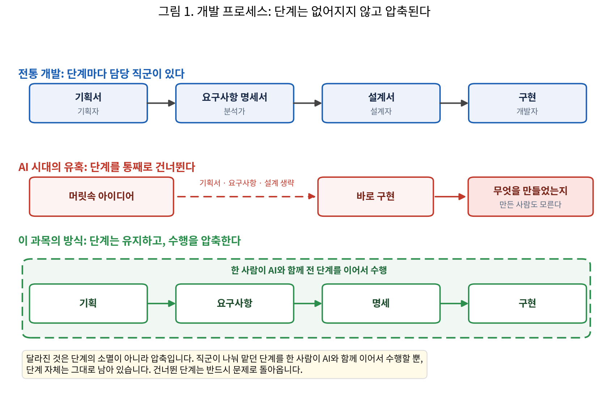

[2주차] 리버스 엔지니어링과 SDD
LLM AI 개발
2주차
리버스 엔지니어링과 SDD
실습 자료 이 주차 키트 파일 보기 · 내려받기
현재 실행 기준(v0.70): 트랙 선택 없이 예제 넷을 쉬운 재료부터 전원이 순서대로 합니다. A(수영 강좌 찾기, 광주시스포츠헬스센터 수영 프로그램 페이지 URL 하나를 전원이 같이, 8단계) → B(광주시청 채용시험정보 게시판 URL 하나를 전원이 같이, 축약 4단계) → C(근처 맛집, URL로 읽히지 않는 지도 앱 화면을 브라우저 AI Aside가 조작해 관찰하는 교수 데모 5장 + 보충 2장 + 복기, 결과물은 키트
맛집/에) → D(포트폴리오, 공개 저장소의 코드, 7단계). 학생이 손으로 만드는 파일은 없습니다. 0장의cp -n(양식 복사) 한 번 뒤로 손으로 쓰는 곳은내소재.md의 칸, 명세서의← 고침·← 추가한 줄, 프롬프트의 「 」뿐입니다. URL은 프롬프트에 붙이고, 발전은 명세에 EARS 한 줄을 직접 더한 뒤 프롬프트 하나로 다시 만듭니다(메타프롬프트 없음). 화면 명세(Pencil)는 D의 결과포트폴리오/rebuild/index.html에 적용하고,.pen시안은 Claude Code가 pencil MCP로 그린 뒤 사람이 캔버스에서 고칩니다. 명세는 문장(요구사항명세서.md)과 화면(내화면.pen) 두 파일입니다. 덱 v0.34(2026-09-10, 77장 · 최종판)와 전 장 대조로 정합합니다. 키트는week02/(예제 폴더 넷과 csv ·맛집/에 교수 데모 결과물(서비스관찰.md·네이버지도-구조분석.md·캡처/·spec/·rebuild/) ·내소재_양식.md· 강의안)입니다. 검증 결과와 남은 리허설은최종마무리_260909.md에 있습니다. PDF는 교수자가 PowerPoint 최종 수정 후 직접 export합니다.
1주차에서 AI를 회사에서 믿고 쓸 수 있도록 개발방법론으로 통제한다는 원칙을 세웠습니다. 이번 주는 그 방법론의 첫 기술입니다. 개발 업무는 비즈니스의 니즈에서 “요구사항”이 정리되면, 그 요구사항을 “명세”로 만들어, 결국 “코드로 구현”하는 프로세스입니다. AI에게 회사의 일, 즉 코드 구현 작업을 시키기 위해서는 “요구사항”과 “명세”가 필요합니다. AI를 제대로 부리는 도구인 요구사항 명세를, 반대 순서로 완성된 코드에서 뽑아내겠습니다. 요구사항 명세의 소스는 자기가 만들었던 프로젝트, 배포한 예제, 상용 서비스 URL 모두 가능합니다.
이번 주에는 과목 전체의 프레임인 요즘 널리 쓰이는 AI 활용법 진화 로드맵도 살펴봅니다. 좋은 명세를 만들고 발전시키는 역량은 AI 활용 단계의 어디에서든 유용합니다.
이번 주의 이름은 리버스 엔지니어링입니다. 이미 있는 좋은 레퍼런스에서 설계 정보(명세)를 꺼내고, 그 명세를 상세히 읽고, 그 명세로 내 것을 만듭니다. 오늘은 예제 넷을 쉬운 재료부터 전원이 같은 순서로 합니다. ① 예제 A · 수영 강좌 찾기: 공개 안내 페이지의 URL 하나를 AI가 읽어 명세를 뽑고, 읽고, 명세만으로 명령줄 프로그램을 다시 만들어 페이지와 비교한 뒤, 명세에 요구 한 줄을 직접 더해 다시 만듭니다(5장, 8단계). ② 예제 B · 채용시험정보: 재료만 광주시청 게시판 URL로 바꿔 같은 절차를 축약으로 한 번 더 합니다(6장). ③ 예제 C · 근처 맛집: 지도 앱은 URL만으로 읽히지 않으므로 화면을 보는 브라우저 AI가 관찰 메모를 쓰는 것을 교수 데모로 봅니다. 근거를 만드는 주체가 바뀌어도 뒤의 여섯 단계는 같습니다(7장, 결과물은 키트 맛집/에). ④ 예제 D · 포트폴리오: 공개 저장소의 코드에서 명세를 뽑고, HTML 한 장으로 다시 만들어 원본과 교수 화면에서 비교한 뒤, 회사에 낼 내 포트폴리오로 바꿉니다(7단계). 기능은 맞는데 배치가 다른 것이 문장 명세가 정하지 않은 것이고, 그것이 ⑤ 화면 명세의 입력입니다(8장). ⑤ 화면 명세: D의 결과에 Pencil 캔버스로 한 화면을 설계해 적용합니다. 명세는 문장과 화면 두 파일입니다(9장). 마지막에 내 프로젝트에 가장 가까운 예제 하나를 골라 둡니다(11장). 앞의 1~3장은 로드맵·문서 우선·Claude Code 사이클을 짧게 짚습니다. 시작은 매주 같습니다. 환경 접속과 자료 받기(0장)입니다.
학습 목표
- 완성된 소프트웨어를 분석하여 요구사항 명세서로 복원할 수 있다.
- 예시: 문서가 없거나 사라진 레거시 시스템이나 관심 있는 상용 서비스를 분석해 요구사항 명세서로 재구성
- 활용: 코드에 감춰진 지식을 문서로 꺼내 개발을 넘어 전 조직의 자산으로 만드는 능력. 시스템 인수인계, 레거시 현대화, 경쟁 서비스 분석처럼 “문서가 없는 것에서 시작하는 일”을 주도
- 요구사항을 사람과 AI가 같은 뜻으로 읽는 명세 문장(EARS)으로 쓸 수 있다.
- 예시: “로그인이 잘 되게 한다”를 “사용자가 잘못된 비밀번호를 입력하면, 시스템은 오류 메시지를 표시해야 한다”로 교정
- 활용: 기획·개발·테스트·AI가 같은 문장을 보고 일하게 만드는 공통 계약의 작성. AI가 코드를 만드는 시대에는 명세의 품질이 제품 품질의 상한이 됨
- 완료 조건이 든 지시와 Plan 모드로, AI의 실행을 시작 전에 통제할 수 있다.
- 예시: 구조 추정을 시키며 완료 조건 ①~③을 붙이고, Plan 모드로 읽기만 하게 한 뒤 “계획을 승인할까요?”에서 검토
- 활용: AI든 동료든 일을 맡기는 모든 상황에 통하는 “위임”의 기본기. 일을 검증 가능한 단위로 분해하는 것은 다음 주 TDD의 작업 분해로 이어짐
0. 시작하기: 환경 접속, 자료 받기, 지난주 되짚기
매주 수업은 같은 순서로 시작합니다. 서버에 접속하고, 터미널 2개를 배치하고, Claude Code가 동작하는지 점검하고, 이번 주 자료를 받습니다. 처음이거나 절차를 잊었어도 이 장만 따라오면 오늘 실습을 시작할 수 있습니다.
0-1. 실습 환경 접속
- 서버 접속. PowerShell에서
ssh 아이디@서버주소(비밀번호는 쳐도 안 보임), 또는 VS Code Remote-SSH(F1→Remote-SSH: Connect to Host→아이디@서버주소→ File > Open Folder →/home/아이디). 프롬프트가[아이디@실습서버 ~]$면 성공입니다. 지금 이 창이 내 PC인지 서버인지는 프롬프트가 알려줍니다.PS C:\Users\이름>은 내 PC,[아이디@실습서버 ~]$는 서버입니다. 처음 접속하거나 절차를 잊은 사람. 계정은 1주차에 나눠 준 아이디(이름 영문 약자+성, 예: 홍길동 → gdhong)이고 목록은 덱의 「접속 · 첫 접속」 장에 있습니다. 설치가 안 되어 있으면 「접속 · 설치」 장을 따릅니다. PowerShell을 열고(시작 검색 “Windows PowerShell” 또는 Win+X → 터미널) 아래를 칩니다. 첫 접속에만continue connecting? (yes/no)?질문이 나오고yes를 칩니다. 비밀번호는 쳐도 화면에 안 보이는 것이 정상이고, 끊기면 다시ssh부터입니다. 초기 비밀번호는 전원 공통이니 접속 뒤passwd로 반드시 바꿉니다(현재 비밀번호 → 새 비밀번호 2번 →updated successfully). 아이디나 비밀번호를 모르면 손을 듭니다.
ssh 아이디@서버주소 passwd- 확인 1 프롬프트가 내 위치를 알려줍니다.
PS C:\Users\이름>= 내 PC,[아이디@실습서버 ~]$= 서버.
- 터미널 2개 배치. VS Code에서 Terminal > New Terminal, 분할 아이콘으로 하나 더. 이 터미널은 서버에서 열리므로
ssh를 다시 치지 않습니다. 서버 터미널은 환경을 만들고 결과를 직접 실행해 보는 창, Claude Code 터미널은 Claude에게 지시해 만드는 창입니다. 강의안의 배지[Claude Code 터미널]/[서버 터미널]가 이 구분입니다. Remote-SSH가 안 되면 PowerShell 창 2개로 진행합니다. - 환경 점검. claude 버전 → API 키 → 모델 순서로 칩니다.
claude --version
echo ${ANTHROPIC_API_KEY:0:8} 2.x.x (Claude Code)
sk-ant-a > /status
> /exit/status에 Model: haiku가 보이면 준비 완료입니다. 아니면 /model에서 Haiku를 다시 선택합니다. 비밀번호를 잊었으면 손을 들어 알립니다. claude: command not found면 터미널을 닫고 새로 엽니다. claude를 실행했을 때 로그인 방법을 고르는 화면이 나오면 키 등록이 빠진 것입니다.
아직 설치와 키 등록을 하지 않았다면(처음이거나 잊었다면). 1주차 강의안 4~6장(실습 1~3)을 순서대로 따라옵니다. 요약하면 curl -fsSL https://claude.ai/install.sh | bash → 터미널을 닫았다 새로 열기 → claude --version → cat ~/*.txt로 키 복사 → echo 'export ANTHROPIC_API_KEY=발급키' >> ~/.bashrc → source ~/.bashrc → claude 첫 실행 승인(Yes → Security notes에서 Enter → 폴더 신뢰 Yes) → /model에서 Haiku 선택 → /status. 모두 최초 1회이고 재접속해도 유지됩니다.
0-2. 이번 주 자료 받기
서버에는 성격이 다른 폴더가 둘 있습니다. 내 폴더 /home/아이디(읽기+쓰기, 작업 공간이자 제출함)와 공용 배포 폴더 /home/공용계정(읽기 전용, 매주 week01, week02처럼 주차 폴더로 배포). 파일을 고치는 작업은 배포 폴더의 이번 주 폴더를 내 폴더로 복사해 온 뒤 내 폴더에서 합니다.
cd ~
cp -rn /home/공용계정/week02 ~/
ls week02
cp -n week02/내소재_양식.md week02/내소재.md 강의안_02주차.md 내소재_양식.md 맛집
슬라이드_02주차.pdf 운동 채용 포트폴리오cp -rn은 폴더를 통째로 복사하되 이미 있는 파일은 덮어쓰지 않는다는 뜻이고, cp -n은 내소재.md가 없을 때만 양식을 복사하므로 기존 답안지는 덮어쓰지 않습니다. 운동(A) · 채용(B) · 맛집(C) · 포트폴리오(D)가 오늘의 예제 폴더이고(맛집은 교수 데모, 각 폴더 안에서 작업, 결과물 spec/ · rebuild/가 그 폴더에 쌓임, 학생이 폴더나 파일을 손으로 만드는 일은 없음), 내소재_양식.md는 답안지의 원본이고, 복사해 만든 내소재.md가 오늘 답을 쓰는 파일입니다. 만들자마자 VS Code에서 열어 탭으로 띄워 둡니다. 양식 쪽에는 쓰지 않습니다. 오늘 만드는 산출물은 모두 이 week02 폴더 안에 둡니다. 과제(오늘의 답)는 week02/내소재.md를 VS Code로 열어 작성합니다. 결과물은 업로드가 없습니다. VS Code가 서버에 연결되어 있어 저장(Ctrl+S)이 곧 서버에 쓰는 것이고, 내 PC의 파일을 올릴 때만 VS Code 탐색기에 끌어다 놓습니다.
슬라이드 PDF와 강의안을 내 PC에서도 보려면 내 PC의 새 PowerShell 창에서 받습니다. 서버 접속 창은 그대로 두고 창을 하나 더 엽니다. 명령 끝의 마침표(.)는 “지금 이 폴더로”라는 뜻이고, 서버 창에서 치면 내 PC가 아니라 서버 안에 내려받아집니다.
scp 아이디@서버주소:/home/공용계정/week02/*.pdf .
scp 아이디@서버주소:/home/공용계정/week02/강의안_02주차.md .
start 슬라이드_02주차.pdf강의안 .md는 VS Code에서 열고 Ctrl+Shift+V(미리보기)를 누릅니다. 별도 설치 없이 되는 내장 기능이며, 터미널이 아니라 편집기에서 누르는 단축키입니다. 서버로 받은 week02/강의안_02주차.md도 같은 방법으로 봅니다.
확인: 터미널 2개가 서버 프롬프트로 열리고, /status에 haiku가 보이고, ls week02에 강의안·양식·예제 폴더 넷이 보입니다(PDF는 교수자가 export한 뒤 추가됩니다).
- 확인 2 내 PC에 슬라이드 PDF와 강의안
.md가 받아졌고, PDF가 화면에 열렸다.
0-3. 지난주 되짚기
지난주에는 말로만 시켜 웹페이지를 만들어 보고(바이브 코딩), 그렇게 만든 소프트웨어가 서비스에서 낸 사고 네 건(개인정보 유출 · 운영 DB 삭제 · 배포 직후 공격 · 취약한 앱 170개)과 그런 착각을 파는 강의 시장을 봤습니다. 이 과목의 방향은 같은 도구를 기업 환경에 맞게 올바르게 쓰는 에이전틱 코딩(요구사항을 쓰고 검증을 붙인다)이고, 규칙은 네 가지(공식 문서 수시 참조 · AI가 내 팀원 · AI 결과를 설명할 수 있을 것 · 결과물은 3종 세트)였습니다. 마지막에는 숫자 맞히기 게임을 두 방식으로 만들었습니다. 말로만 시킨 결과물은 코드 하나가 남았고, 요구사항 → 테스트 → 통과로 시킨 결과물은 REQUIREMENTS.md · test_guess.py · guess.py 세 파일이 남았습니다.
그때 생각해 본 세 가지가 오늘의 출발점입니다. ① 내가 말하지 않았는데 AI가 스스로 정한 것은 무엇인가, 그것이 요구사항의 빈틈입니다. ② 이 코드가 맞는지 확인할 방법이 있는가, 그것이 테스트이고 다음 주의 주제입니다. ③ 요구를 하나 더 붙이려면 어디를 고쳐야 하는가, 그 자리가 명세입니다. 오늘은 완성된 소프트웨어에서 이 명세를 거꾸로 뽑아내고, 명세만으로 다시 만들어 빈틈을 눈으로 확인합니다.
지난주의 그림 하나를 다시 봅니다. 과거에는 아이디어에서 완성까지 열 단계를 거쳤고, 지난주에 본 방식(바이브 코딩)은 다섯 단계입니다.
flowchart TB
subgraph PAST["과거의 개발 과정: 열 단계"]
direction TB
P1["💡 아이디어"] --> P2["프로그래밍 언어 학습"] --> P3["프레임워크 학습"] --> P4["환경 설정"] --> P5["라이브러리 선택"] --> P6["코드 작성"] --> P7["디버깅"] --> P8["테스트"] --> P9["배포"] --> P10["🚀 완성"]
end
subgraph NOW["현재의 개발 과정: 다섯 단계 (지난주에 본 방식)"]
direction TB
N1["💡 아이디어"] --> N2["의도를 자연어로 설명"] --> N3["AI가 구현"] --> N4["검토 및 수정 지시"] --> N5["🚀 완성"]
end
그런데 왼쪽에 있던 상자 몇 개가 오른쪽에 없습니다. 환경 설정·디버깅·테스트·배포는 오른쪽 어느 상자에 있습니까. 사라진 것인지 어디로 간 것인지가 오늘의 질문이고, 답은 2장의 그림 1에서 확인합니다.
지난주 마무리 상태입니다. 개인 폴더에 README.md가 있고(제출물), week01 폴더에 첫 프로그램과 3종 파일이 있습니다. 없어도 오늘 실습에는 지장이 없습니다.
1. AI 활용법 진화 로드맵
도입부에서 말한 네 단계를 그림으로 보면 이렇습니다.
graph LR
P["<b>프롬프트 엔지니어링</b><br/>무엇을 할지 매번 정확히 지시"] --> C["<b>컨텍스트 엔지니어링</b><br/>올바른 판단을 하도록 전체 정보 포함<br/><i>CLAUDE.md</i>"] --> H["<b>하네스 엔지니어링</b><br/>답변의 안정성을 보장하는 시스템 설계<br/><i>MCP·Skill·Hook</i>"] --> L["<b>루프 엔지니어링</b><br/>전체가 완성될 때까지 피드백/개선 반복<br/><i>에이전트·자동화</i>"]
각 단계에서 “일반인이 아무렇게나 시킬 때”와 “개발자가 제대로 시킬 때”를 비교해 봅니다. 오른쪽이 지금은 어렵게 보일 수 있지만, 학기가 끝날 때는 여러분도 익숙하게 사용할 수 있습니다.
| 단계 | 아무렇게나 시킬 때 | 제대로 시킬 때 |
|---|---|---|
| 프롬프트 | “게시판 만들어 줘” | “회원만 글을 쓸 수 있는 게시판을 만들어라. 완료 조건: ① 비회원이 작성을 시도하면 로그인 화면으로 이동 ② 글 저장 성공 시 목록 갱신 ③ pytest 테스트 3건 통과. 수정할 파일 목록을 먼저 보여라” |
| 컨텍스트 | 세션마다 프로젝트 배경을 처음부터 다시 설명 | CLAUDE.md(Claude가 세션마다 자동으로 읽는 파일)에 “이 프로젝트는 계층형 구조를 따른다, 테스트는 pytest로 실행한다, DB 구조는 docs/schema.md를 참조하라”를 적어 두고 매 세션 자동 적용 |
| 하네스 | AI에게 무엇이든 허용했더니 팀 폴더 포맷 | 사내 문서 검색을 MCP 도구로 등록해 주고, “테스트 없이 커밋 금지”는 훅(Hook)으로 자동 차단하며, 운영 데이터 접근 권한은 처음부터 주지 않음 |
| 루프 | 한 번 시켜 나온 결과를 계속 수작업 채팅으로 디벨롭 | “실패하는 테스트를 모두 통과시킬 때까지 수정과 실행을 반복하라. 전체 테스트 통과 시 종료. 10회를 넘기면 중단하고 상황을 보고하라”로 반복 자체를 설계 |
네 이름 모두 업계에서 실제로 쓰는 말입니다. 앞의 둘은 표준 용어이고(프롬프트 엔지니어링은 Anthropic 공식 가이드, 컨텍스트 엔지니어링은 Anthropic 기술 블로그의 용어), 뒤의 둘도 Anthropic 공식 문서와 업계 리더들의 글에서 쓰이며 사실상 표준으로 자리 잡아 가는 중입니다(하네스 엔지니어링은 Martin Fowler 사이트의 해설이 대표적이고, Anthropic은 공식 문서에서 Claude Code 자체를 “에이전틱 하네스”라고 부릅니다. 루프 엔지니어링도 같은 흐름의 용어입니다). 각 단계의 내용은 해당 주차에서 소개합니다.
도구의 발전 속도가 너무 빠르기 때문에, 도구에 상관없이 적용되는 이 로드맵이 유용합니다. AI 도구는 MCP(Model Context Protocol, 모델 컨텍스트 프로토콜, AI를 외부 서비스·도구에 연결하는 표준 규약), Skill(재사용 가능한 작업 절차·지식을 담은 문서), Hook(정해진 시점에 자동 실행되는 스크립트) 같은 새 기능을 빠르게 내놓습니다. 새 도구나 신기능을 전부 알려고 하는 공부는 불가능할뿐더러 유효기간이 짧습니다. 새 기능 대부분은 이 로드맵의 특정 단계에 해당합니다. MCP는 하네스의 도구 연결에, 메모리 기능은 컨텍스트 관리에 해당합니다. 새 기능이 나오면 “이게 로드맵의 어디인가”를 확인하면 바로 사용방법과 연결됩니다.
새 기능이 로드맵의 단계를 강화하는 모습은 이미 여럿 있습니다. MCP는 AI가 외부 도구 · 데이터(GitHub, DB, 브라우저, 사내 시스템)를 같은 방식으로 부르게 하는 공개 규약이라, 한 번 만든 MCP 서버는 Claude · Cursor · ChatGPT 어디서든 그대로 쓰입니다. 로드맵에서는 하네스(AI가 쓸 도구와 범위를 정함)이면서 컨텍스트(가져온 자료가 AI의 입력이 됨)에 걸칩니다. 메모리는 대화가 끝나도 남는 정보로, 사람이 적어 두는 CLAUDE.md와 AI가 작업 중 배운 것을 스스로 파일에 적어 다음 세션에 읽는 자동 메모리 두 종류가 있습니다. “세션마다 다시 설명”을 없애는 컨텍스트 단계의 기능이고, 무엇을 기억할지는 사람이 정합니다. 기업용 서비스도 같은 기능을 냅니다(국내 웍스AI는 2026년 7월 회사 전체에 메모리를 한 번에 켜는 옵션을 냈습니다). LLM 위키는 Karpathy가 2026년 4월 제안한 방식으로, 원본 자료(raw) · AI가 정리한 위키(wiki) · 운영 규칙(schema) 세 폴더를 두고, 질문마다 원문을 다시 검색하는 대신 AI가 자료를 넣을 때마다 개념 · 인물별 마크다운 페이지를 쓰고 서로 링크하며 갱신합니다. 지식이 쌓이고, 모순과 빈틈이 페이지에 드러나며, 사람이 읽고 고칠 수 있습니다. 컨텍스트가 본체이고, AI가 위키를 스스로 관리하는 부분은 하네스와 루프에 걸칩니다. MCP처럼 어느 한 단계라고 단정하기 어려운 기능도 있지만, 어느 단계를 강화하는지 보면 쓰는 자리가 보입니다.
그 연습(변경점 조사)은 공식 체인지로그를 함께 읽으며 합니다. 브라우저로 열어 최근 항목 몇 개를 훑고, 하나씩 “이건 로드맵의 어디인가”를 말해 봅니다. 예를 들어 2.1.261(9/4)의 “/status에 조직 정책을 못 읽은 이유 표시”는, 조직 정책이 회사가 모든 세션에 강제하는 규칙이니 하네스입니다. /rewind(대화 되감기)는 세션의 기억을 다루니 컨텍스트이고, 새 모델을 기본으로 적용했다는 항목은 어느 단계도 강화하지 않는 성능 변화라 해당 없음입니다. 모델 교체 · 속도 · 화면 표시 · 요금 · 버그 수정이 대체로 그렇습니다. 항목 하나를 골라 어느 단계인지, 아니면 왜 해당 없음인지 말할 수 있으면 이 장의 목적은 이룬 것입니다. 새 기능이 나올 때마다 이렇게 자리를 찾아 두면 쓰는 법이 따라옵니다.
이 분류는 AI에게 시킬 수도 있습니다. 그때는 체인지로그를 근거로 못 박고 없는 항목은 만들지 말라는 조건을 붙입니다. 근거를 정하지 않으면 AI는 학습 시점의 기억으로 답해 없는 기능을 넣거나 최신 항목을 빠뜨립니다. 아래는 수업 뒤에 직접 해 보고 싶은 사람을 위한 프롬프트입니다(선택). 페이지가 길어 응답에 몇 분이 걸립니다.
# (선택, 수업 뒤) Claude Code 안
code.claude.com/docs/en/changelog 의 최근 변경점을 목록으로 정리하라. 체인지로그에 있는 항목만 쓰고 없는 항목은 만들지 마라. 항목마다 AI 활용 로드맵의 프롬프트·컨텍스트·하네스·루프 중 어느 단계인지 명시하고, 어느 단계에도 해당하지 않으면 왜 그런지 한 줄로 설명하라.운영체제 수업 복습 겸, 이번 학기 실습에서 계속 터미널 리눅스 명령을 연습합니다. 터미널과 Claude Code를 오가는 사용법은 이 과목의 방식인 동시에 실무의 기본입니다.
2. 왜 문서가 먼저인가
실제 개발은 기획서(Project Charter, 프로젝트 헌장)에서 요구사항 명세서와 설계서를 거쳐 구현까지 가는 긴 프로세스입니다. 회사에서는 이 개발 프로세스의 각 단계마다 담당 직군이 있습니다. 그런데 AI가 코드를 바로 만들어 주는 시대가 되자 이 과정을 통째로 건너뛰는 방식이 나타났습니다. 머릿속에 문득 떠오른 생각을 그대로 던져 구현해 버리는 것입니다. 바이브 코딩 사고들이 모두 여기에서 나왔습니다. 수습하기도 어려운 근본 원인은 “요구사항 문서가 없어서 무엇을 만들었는지 만든 사람도 모른다”입니다.
개발자가 더 이상 필요 없다는 회사 경영자들의 착각 역시 이 지점에서 발생합니다. 해외에서는 AI를 믿고 개발자를 줄였던 회사들이 AI가 만든 코드의 사고를 수습하려고 개발자를 다시 고용하는 사례가 보도되었습니다(Gizmodo 보도, Lucas Ropek, 2025-09-12, 404 Media 취재 인용). 프리랜서 시장 Fiverr에는 “바이브 코드 수리” 전문가가 등장했고, 그중 Hamid Siddiqi는 15~20개 고객사와 상시 작업 중이라고 밝혔습니다. 흔한 의뢰는 일관성 없는 UI/UX, 성능을 떨어뜨리는 코드, 돌아가긴 하지만 어설픈 기능, 인증 구멍입니다. 바이브 코드 수습이 하나의 직업이 되어 전문 중개 사이트(VibeCodeFixers.com)가 생겼고, 경력 개발자 300명 이상이 등록했습니다.
이 착각은 개발만의 일이 아닙니다. 결제 기업 Klarna의 경영진은 상담 업무를 AI가 해결한다고 보고 상담 인력을 AI로 대체했습니다. AI가 700명분의 상담 업무를 처리한다고 발표했고, 인력은 2년 새 5,500명에서 약 3,000명으로 줄었습니다. 그러나 상담에도 고객의 문제를 파악하고 해결까지 끌고 가는 그 직군의 과정과 전문성이 있었고, 결국 품질 저하를 CEO가 인정하고 사람을 다시 채용했습니다(TechCrunch 보도, 2025-06-04, London SXSW 현장 발언 “사람의 상담은 언제나 VIP 서비스일 것”). 어느 도메인이든 마찬가지입니다. 사고는 과정을 모르는 사람이 치고, 수습은 결국 그 과정을 아는 사람이 합니다.
사고의 반대편 증거도 같은 조건을 가리킵니다. Andrej Karpathy(전 Tesla AI 총괄, OpenAI 창립 멤버)는 2026년 2월 26일 X에 “코딩 에이전트는 지난 12월 전에는 사실상 안 됐고, 그 뒤로는 사실상 된다”고 썼습니다(원문, 조회 516만). 서버 접속·환경 설정·모델 벤치·웹 대시보드·서비스 등록·보고서 작성까지 에이전트가 30분 동안 혼자 끝낸 사례를 들면서, 세 가지 단서를 붙였습니다. “잘 명세된 일, 기능을 검증·테스트할 수 있는 일에서 훨씬 잘 된다”, “핵심은 일을 알맞게 분해하는 감각이다”, “높은 수준의 방향·판단·감각·감독·반복이 필요하다”. 이 세 단서가 이 과목의 순서입니다. 명세(오늘), 검증(다음 주 TDD), 분해(작업 분해와 완료 조건). 그가 말한 “에이전트를 띄우고 영어로 일을 시키고 결과를 병렬로 관리·검토한다”는 모습이 로드맵의 루프 단계이고, 거기까지 가는 길에 프롬프트·컨텍스트·하네스가 있습니다. 같은 흐름의 참고 자료로, 결과부터 보는 바이브와 의도부터 정하는 에이전틱을 비교한 Karpathy의 다른 게시글과 “일을 알맞게 분해하는 감각”을 다룬 국내 보도 두 건(디지털투데이 · 시티타임스)을 수업 화면에서 함께 봅니다.
0-3의 질문의 답입니다. AI 시대에 개발의 단계는 사라진 것이 아니라 “같은 내용이 고밀도로 압축”된 것입니다. 지난주 그림에서 빠진 것처럼 보이던 환경 설정·디버깅·테스트·배포는 「검토 및 수정 지시」 상자 하나에 압축돼 들어 있습니다. 기획자, 분석가, 설계자, 개발자 직군이 나눠 하던 일을, 이제 한명이 AI를 시켜서 완수할 수 있게 되었습니다. 하는 사람이 통합되었을 뿐 단계 자체는 그대로 남아 있는데, 없어졌다고 착각하고 건너뛴 단계는 반드시 문제로 돌아옵니다.

앞의 프로세스에서 각 단계가 남기는 산출물은 모두 문서입니다(기획서, 요구사항 명세서, 설계서 등). AI 협업에서는 이 문서들이 곧 AI의 컨텍스트가 됩니다. AI는 정보가 비어 있으면 사람처럼 멈추지 않고, 대신 그럴싸한 답을 만들어 채우는 특성이 있어서, 빈틈 없이 짜인 문서만이 그 추측이 끼어들 자리를 없앱니다. AI를 정해 둔 틀 안에서 움직이게 한다는 점에서, 이 역할은 로드맵의 하네스 단계와 맞닿아 있습니다.
명세를 먼저 확정하고 그 명세가 구현과 검증 전체를 주도하게 하는 방식이 “명세 주도 개발”(SDD, Spec-Driven Development)이고, AI 코딩 도구의 확산과 함께 업계 표준 작업 방식으로 자리 잡고 있습니다(GitHub 공식 블로그의 소개). GitHub는 이를 “코드가 진실의 원천”에서 “의도가 진실의 원천”으로의 이동이라고 설명하고, GitHub Spec Kit과 AWS Kiro는 요구 → 명세(spec) → 계획(plan) → 작업 분해(tasks) → 구현 → 검증의 흐름을 명령으로 제공합니다. Kiro는 명세를 이번 주에 배우는 EARS 문형으로 씁니다. 이미 다른 수업에서 배웠듯이 AI 협업에서는 SDD의 장점이 더 커집니다. 좋은 명세만 있으면 AI는 몇 번이든, 같은 품질을 유지하며, 빠르게 다시 구현할 수 있습니다.
“명세”에서 “구현”까지 가는 개발 프로세스는 역방향으로도 됩니다. 오늘 실습의 중심은 완성된 소프트웨어에서 명세를 추출하는 일입니다. 그 전에 Claude Code로 만들고 확인하는 기본 사이클부터 익힙니다.
3. 리마인드: Claude Code 사이클
Claude Code가 일하는 방식을 확인합니다. 공식 문서 How Claude Code works는 이를 에이전트 루프(agentic loop) 개념으로 설명합니다. Claude Code는 지시를 받으면 세 단계를 반복합니다. (1) 정보 수집(gather context) 단계에서 파일을 검색하고 읽어 상황을 파악하고, (2) 행동(take action) 단계에서 코드를 수정하거나 명령을 실행하며, (3) 검증(verify results) 단계에서 테스트 등으로 작업의 정확성을 확인합니다. 이 반복은 작업이 완료될 때까지 이어지며, 사용자는 어느 시점에든 개입하여 방향을 바꿀 수 있습니다. 정보 수집 단계에서 읽히는 것이 명세입니다. 오늘의 명세는 두 파일, 문장(요구사항명세서.md, 기능)과 화면(내화면.pen, 배치)이고, 둘 다 이 단계에서 읽힙니다. 명세가 정하지 않은 것은 루프가 스스로 추측해 채우므로, 정하지 않은 것이 곧 사고의 자리입니다.
이러한 Claude Code의 작업 내용은 화면에도 노출됩니다. 일하는 동안 “생각 중” 같은 상태 표시와 파일 읽기·수정·명령 실행 메시지가 번갈아 나타나는데, “생각 중”은 지금까지 모은 정보로 다음 행동을 판단하는 순간이고, 그 사이의 메시지들이 정보 수집과 행동입니다.
graph LR
U["사용자 요청"] --> G["정보 수집<br/>Gather Context<br/>파일 검색·읽기"]
G --> A["행동<br/>Take Action<br/>코드 수정·명령 실행"]
A --> V["검증<br/>Verify Results<br/>테스트 실행·확인"]
V -->|"미완료: 반복"| G
V -->|완료| R["결과 보고"]
H["사용자 개입<br/>언제든 중단·수정 가능"] -.-> G
H -.-> A
H -.-> V
이 실습의 목적은 (1) AI가 만든 것을 사람이 확인하는 작업 방식, 그리고 (2) 터미널과 Claude Code를 오가는 작업 방식에 익숙해지는 것입니다. 명령 블록 앞의 배지가 실행 위치입니다. [Claude Code 안]은 Claude Code 대화창에 쓰는 입력이고, 배지가 없는 텍스트 블록은 파일 내용이나 화면 출력의 예시입니다.
지난주 정리 활동에서 한 사이클 그대로입니다. 들어가서 시키고(Claude Code 터미널), /exit로 나와 서버 터미널에서 ls → cat → python3로 확인하고, 다시 들어가 고칩니다. 오늘 실습 전체가 이 왕복이므로 수업에서는 이 문단으로 상기만 하고 바로 4장으로 갑니다. 두 터미널의 현재 폴더는 각각 따로 바뀝니다. 한쪽에서 cd를 해도 다른 쪽은 움직이지 않으므로, 예제마다 두 터미널을 그 예제 폴더로 옮깁니다. 지난주에 못 했으면 아래 절차(hello.py)를 먼저 한 번 하고 옵니다. week02 폴더는 0장에서 받아 두었고, 오늘은 week02/hello_llm 폴더에서 합니다.
- 서버 터미널의 개인 폴더에서 실습 폴더를 만들고, 이동한 뒤, Claude Code를 실행합니다.
mkdir -p ~/week02/hello_llm
cd ~/week02/hello_llm
claude- (만들기) Claude Code 안에서 요청합니다.
인사말을 출력하는 파이썬 스크립트 hello.py를 작성하라.Claude가 응답하는 동안 화면을 관찰합니다. “생각 중”이 뜰 때마다 다음 행동을 판단하고 있는 것이고, 무엇을 확인하고(정보 수집) 무엇을 만드는지(행동)가 그 사이에 출력됩니다. 응답은 대략 “✻ 생각 중… → Write(hello.py) → ● hello.py를 만들었습니다. print(”안녕하세요!“) 한 줄짜리 스크립트입니다”처럼 나오지만, 프롬프트가 같아도 응답과 코드는 사람마다 다릅니다. 인사말 문구와 코드 모양을 옆 사람과 비교합니다.
- (확인)
/exit로 Claude Code를 나와, 서버 터미널에서 결과를 확인합니다. 서버 터미널은 아직 홈 폴더에 있으므로 먼저 실습 폴더로 이동합니다. 한 창에서 해도 됩니다. Claude Code 터미널은/exit뒤에도hello_llm폴더에 있으므로 그 창에서cat·python3를 쳐도 같습니다(덱의 hello.py 한 바퀴). 순서대로 이동, 파일 생성 여부, 코드 내용, 실행 결과를 확인하는 명령입니다.
cd ~/week02/hello_llm
ls
cat hello.py
python3 hello.py- 확인 3 (처음이거나 잊었다면)
python3 hello.py의 실행 결과를 확인하였다.
- (다시 시키기) Claude Code를 다시 실행해 수정을 요청합니다.
claude hello.py가 인사말과 함께 현재 날짜와 시각도 출력하도록 고쳐라./exit로 나와 터미널에서 다시 실행하고, 달라진 결과를 확인합니다.
python3 hello.py- 확인 4 (처음이거나 잊었다면) 수정 후 달라진 실행 결과를 확인하였다.
터미널과 Claude Code를 두 차례 오갔습니다. 다른 실습도 같은 방식으로 진행합니다.
4. 리버스 엔지니어링: 오늘의 예제 넷과 공통 절차
설계도에서 완성물을 만드는 것이 엔지니어링입니다. 반대로, 리버스 엔지니어링(reverse engineering, 역공학)은 완성물에서 그것을 만든 설계 정보를 추출하는 기법입니다. 맛집 레시피를 알아내면 같은 요리를 다시 만들 수 있고, 레시피를 고치면 다른 버전 요리도 만들 수 있습니다.
graph LR
B["완성된 소프트웨어<br/>URL · 화면 · 코드"] -->|"분석"| S["요구사항 명세서<br/>화면·기능·REQ"] -->|"읽기 · 고치기"| S2["내가 검토한 명세서"] -->|"재생성"| B2["재구현된 소프트웨어"]
S2 -->|"요구 한 줄 ← 추가"| N["내 것"]
역추출한 명세로 다시 구현해, 원본과 달라진 부분이 곧 명세의 빈틈입니다. 이렇게 명세의 품질을 검수할 수 있고, 명세를 보강 · 변형하면 원본 없이도 자기가 원하는 소프트웨어로 발전시킬 수 있습니다. 이번 주의 목적은 명세를 읽고 내가 쓸 프로그램이라면 어떻게 할지 판단하는 것입니다. AI가 뽑은 명세를 한 번은 내 눈으로 읽고, 예제마다 읽기 질의에 답하고 개선하고 싶은 한 부분이 있으면 직접 고칩니다. 명세서는 네 예제 모두 AI가 씁니다. 근거만 다릅니다. A · B는 공개 안내 페이지의 URL, C는 브라우저 AI가 지도 앱 화면을 조작해 적은 관찰 기록, D는 git clone으로 받은 코드를 AI가 읽은 것입니다.
오늘은 트랙을 고르지 않습니다. 예제 넷을 전원이 쉬운 재료부터 같은 순서로 합니다. 예제 폴더는 0장에서 받은 week02 안의 운동 · 채용 · 맛집 · 포트폴리오이고, 결과물(spec/ · rebuild/)이 claude를 실행한 폴더에 쌓이므로 각 예제의 작업은 그 폴더 안에서 합니다(두 터미널 모두 그 폴더로 이동). 학생이 폴더나 파일을 손으로 만드는 일은 없습니다. 손으로 쓰는 곳은 세 종류뿐입니다. week02/내소재.md의 칸(질의 답 · 빈틈 · 내 정보 · 생각 거리), 명세서의 ← 고침 · ← 추가 한 줄, 프롬프트의 「 」. A · B의 URL은 파일로 두지 않고 프롬프트에 붙입니다.
| 예제 | 완성물 · 근거 | 분석 방법 | 재생성물 | 내 것으로 바꾸는 지점 | 분량 |
|---|---|---|---|---|---|
| A. 수영 강좌 찾기 (5장) | 광주시스포츠헬스센터 수영 프로그램 안내 페이지 URL(전원 같은 페이지) | AI가 페이지를 읽는다 | python3 명령줄 프로그램 + 강좌.csv(키트, 페이지의 표를 옮긴 것) |
찾은 빈틈 한 줄을 EARS로 명세에 ← 추가 |
8단계 |
| B. 채용시험정보 (6장) | 광주시청 채용시험정보 게시판 URL(전원 같은 페이지) | AI가 페이지를 읽는다 | python3 명령줄 프로그램 + 채용.csv(키트, 게시판 표 10행) |
빈틈 한 줄 ← 추가, 관심 있는 공고 한 건은 프롬프트 「 」로 |
축약 4단계 |
| C. 근처 맛집 (7장) | 네이버 지도 「경기광주역 맛집」 화면(URL로 읽히지 않음) | 브라우저 AI(Aside)가 화면을 조작하며 관찰해 구조 분석서를 쓴다(교수 데모, 실습 아님) | 「학교 기준 맛집 목록」 CLI(키트 맛집/rebuild/, 교수 데모 결과) |
없음. 질문 한 줄만: 내가 관찰할 서비스는 URL로 읽히는가, 눌러야 바뀌는가 | 데모 5장 + 보충 2장 · 복기 |
| D. 포트폴리오 (8장) | 공개 저장소의 포트폴리오 템플릿(코드, git clone) |
코드를 읽는다 | HTML 정적 페이지 한 장 | 회사에 낼 내용(이름 · 지원 직무 · 소개 · 프로젝트 · 연락처)은 프롬프트 「 」로, 요구 한 줄 ← 추가는 선택 |
7단계 |
- 확인 5 네 예제의 폴더 이름과 공통 절차의 순서를 안다.
네 예제의 절차는 같은 여섯 단계입니다. [준비] 예제 폴더에서 시작한다 → [Plan 모드] 읽기만 한다(구조 · 기능 목록, 없는 것은 「추측」 표시) → [Plan 해제] 명세를 저장한다(spec/요구사항명세서.md, REQ마다 EARS 라벨) → [읽기] 내 명세로 만든다(읽기 질의에 답하고 한 곳을 고친다 ← 고침, 고칠 곳이 없으면 없다고 적는다) → [재생성] 명세만 보고 만든다(rebuild/에 명세서만, 원본은 보지 않는다) → [발전] 내 것으로 바꾼다(요구 한 줄을 명세에 ← 추가, 내 항목은 프롬프트 「 」에 넣고 다시 만든다). 바뀌는 것은 근거(URL · 메모 · 코드)뿐입니다. 코드가 아니라 명세를 고치고, 프로그램은 명세에서 다시 나오게 합니다. D의 재생성물(HTML)은 원본과 비교하면 기능은 맞는데 배치 · 모양이 다릅니다. 문장 명세가 정하지 않은 것이고, 그것이 9장 화면 명세(Pencil)의 입력입니다. 11장에서 내 프로젝트에 가장 가까운 예제 하나를 골라 둡니다.
가져오는 것은 구조와 항목이지 문장 · 이미지 · 코드가 아닙니다. 공개 저장소의 코드를 가져다 쓰면 페이지 아래에 출처 링크를 둡니다. 로그인이 필요한 화면(지원 · 스크랩)은 대상이 아니고, 공고 원문은 복사하지 않고 항목만 옮깁니다.
명령 블록의 배지. [서버 터미널]은 명령을 직접 치는 창, [Claude Code 터미널]은 claude를 띄우는 창, [Claude Code 안]은 떠 있는 Claude에 보내는 입력입니다. 배지가 없는 텍스트 블록은 파일 내용이나 화면 출력의 예시입니다.
막힐 때. 분석이 길어지면 Esc로 중단하고 대상을 좁혀 다시 요청합니다. 세션이 끊겼으면 claude --continue로 직전 세션을 이어갑니다. 새 폴더(운동 · rebuild · 채용 등)에서 claude를 처음 띄우면 폴더를 신뢰하겠느냐고 한 번 묻습니다. Yes. URL을 읽을 때 WebFetch 허용을 물으면 Yes. 상위 폴더의 ../내소재.md를 읽어도 되느냐고 물으면 Yes. Plan 모드 진입이 안 되면 Shift+Tab을 다시 눌러 하단 표시를 봅니다(권한 모드는 기본 ↔︎ accept edits ↔︎ plan 순서로 돕니다). Plan 모드에서 “계획을 승인할까요?”라고 물으면 No, keep planning입니다. Yes를 누르면 Plan이 풀려 파일을 고치기 시작합니다. 페이지를 “읽을 수 없다”고 하면 서버 터미널에서 curl -sL 주소 > 페이지.html로 받아 두고 프롬프트의 URL 자리를 페이지.html로 바꿉니다. git clone이 안 되면 예제 D의 준비 단계에 폴백 명령이 있습니다. 실행 명령을 모르면 ls로 파일 이름을 보고 python3 파일이름으로 실행하고, 그래도 모르면 Claude Code에 “이 프로그램의 실행 명령을 알려줘”라고 묻습니다. 원칙은 하나입니다. 오래 붙잡지 않습니다. 멈추고, 대상을 좁히거나 바꿉니다.
5. 예제 A · 수영 강좌 찾기: 명세를 뽑고, 읽고, 한 줄 더해 다시 만든다 (8단계)
이 주차의 첫 예제이자 절차를 끝까지 배우는 예제입니다. 재료는 가장 가볍습니다. 코드도 관찰 메모도 없이, 광주시스포츠헬스센터 수영 프로그램 안내 페이지 하나를 전원이 같은 근거로 씁니다. AI가 페이지를 읽고 명세를 씁니다. 받을 것도 설치할 것도 없어 절차 자체에 집중할 수 있고, 같은 절차를 B(URL) · C(관찰) · D(코드)에서 반복합니다. 코드를 받는 git clone은 D에서 새로 배웁니다. 지도 앱처럼 JavaScript로 그려지는 화면은 URL만으로 읽히지 않아, 예제 C는 관찰 메모에서 시작합니다. 손으로 쓰는 것은 세 곳뿐입니다. 읽기 질의의 답, 빈틈 한 곳, 명세에 더하는 한 줄.
5-1. 레퍼런스: 수영 프로그램 안내 페이지 하나
- 아래 URL을 브라우저로 엽니다. 어떤 강좌 · 시간 · 요금이 보이는지 1분 훑습니다. 표가 둘(청소년/성인 · 어린이) 보이면 맞습니다. 주소는 어디에도 적지 않고 5-3의 프롬프트에 붙입니다. 강좌표는 화면에 텍스트 표로 들어 있어 AI가 읽을 수 있는 유형입니다. 키트의
운동/강좌.csv는 이 페이지의 표(청소년/성인 · 어린이)를 그대로 옮긴 것으로, 재생성 프로그램의 데이터가 됩니다. 가져오는 것은 구조와 항목이지 문장 · 이미지가 아닙니다.
[레퍼런스 URL · 전원 같은 페이지]
https://www.gjcs.or.kr/sportsCentre/program_swim
광주시스포츠헬스센터 · 수영 프로그램 안내 · 강좌 · 요일 · 시간 · 대상 · 요금
[강좌.csv · 키트에 포함 · 페이지의 표를 그대로 옮김]
프로그램,시간,반명,요일,정원,대상,이용료,비고- 확인 6 URL을 브라우저로 열어 강좌표 둘을 봤다.
5-2. 준비: 두 터미널을 예제 A 폴더로 옮긴다
- 이 예제에서 우리가 새로 만드는 파일은 없습니다. 명세와 프로그램은 AI가 이 폴더에 만들고, 우리는 그 파일을 열어 읽고 고칩니다. 그래서 예제 폴더에서 시작합니다. 두 터미널의 폴더는 따로 움직이므로 각각
cd하고pwd로 위치를 확인합니다. 폴더에 이미 있는 것은 둘,강좌.csv(페이지 표를 옮긴 데이터, 재생성 때 씀)와../내소재.md(키트 양식 · 답과 메모를 적는 곳)이고 둘 다 키트에 들어 있습니다. 받을 것도 만들 파일도 없습니다. URL은 파일로 두지 않고 다음 단계 프롬프트에 붙입니다. 전원 같은 URL이지만 결과는 사람마다 다릅니다.
cd ~/week02/운동
pwd
ls /home/아이디/week02/운동
강좌.csv # 이 예제가 끝나면 폴더에 쌓이는 것
운동/
강좌.csv ← 키트
spec/요구사항명세서.md ← 5-4 AI 저장 · 5-5 고침(선택)
spec/프롬프트.md ← 5-4 AI 저장
rebuild/요구사항명세서.md ← 5-6 복사 · 5-8 한 줄 추가(선택)
rebuild/강좌.py ← 5-6 · 5-8 AI 생성- 확인 7 두 터미널이
~/week02/운동에 있고,ls에강좌.csv가 보인다.
5-3. Plan 모드에서 구조와 기능을 뽑는다
- Plan 모드는 읽기와 분석만 되고 파일 수정은 잠기는 상태입니다. 분석 단계에서 파일이 바뀌는 사고를 막습니다. Claude Code 터미널도 예제 A 폴더로 옮겨
claude를 실행하고(첫 실행이면 폴더 신뢰 Yes),Shift+Tab을 두 번 눌러 Plan 모드로 전환합니다. 화면 하단 상태 표시가 plan으로 바뀝니다. Plan 표시가 안 보이면 한 번 더 누릅니다(권한 모드는 기본 ↔︎ accept edits ↔︎ plan 순서). 구조 추정 프롬프트를 보내면 AI가 페이지를 가져와 읽습니다(WebFetch 허용을 물으면 Yes). 대상을 강좌표로 못 박은 것에 유의합니다. 「이 서비스」라고만 하면 AI가 사이트 전체(로그인 · 챗봇 · 대관까지)를 추측으로 채워 명세가 수십 줄로 번집니다. 무엇을 대상으로 삼는지가 분석의 첫 결정입니다. “읽을 수 없다”고 하면 서버 터미널에서 페이지를 받아 둡니다(아래 폴백). 페이지에 없는 것에는 「추측」 표시가 붙어야 합니다. 이어서 기능 목록 프롬프트를 보냅니다. 화면 기능과 내부 처리를 구분하고 기능마다 관련 화면을 붙입니다. 이 목록이 명세서의 뼈대입니다. “계획을 승인할까요?”가 뜨면 No, keep planning.
cd ~/week02/운동
claude # Shift+Tab 두 번 → 하단에 plan 표시
https://www.gjcs.or.kr/sportsCentre/program_swim 페이지의 수영 프로그램 강좌표를 대상으로 구조를 추정하라. 완료 조건: ① 강좌표에 있는 정보 항목의 목록 ② 이 표를 보는 사람이 하려는 일의 추정 목록 ③ 표만으로 알 수 없는 것의 목록. 로그인 · 챗봇 · 다른 메뉴처럼 강좌표 밖의 기능은 대상이 아니다. 표에 없는 내용은 추측이라고 표시하라.
이 서비스의 기능 목록을 만들어라. 완료 조건: 각 기능은 한 줄 설명과 관련 화면 이름을 포함하고, 화면 기능과 내부 처리 기능을 구분한다. ● 화면: 성인 강좌표 · 어린이 강좌표 · 흐름: 프로그램 → 반
● 알 수 없음: 접수 방법, 잔여 정원
● [화면 기능] F1 반 목록 · F2 시간대 찾기 · F3 이용료
● [내부] F4 대상별 분류 · F5 정원 초과(추측)폴백 · “읽을 수 없다”고 하면. 서버 터미널에서 페이지를 받아 두고, 프롬프트의 URL 자리를 페이지.html로 바꿔 다시 보냅니다.
curl -sL https://www.gjcs.or.kr/sportsCentre/program_swim > 페이지.html결과가 실제 페이지와 맞는지 훑어봅니다. 같은 URL인데도 화면 목록이 다르면 AI가 페이지의 어디를 읽었는지가 다른 것입니다. 몇 명의 결과를 화면에 띄워 함께 봅니다.
5-4. 명세 저장 → EARS 라벨링
요구사항 문장을 흔들리지 않게 쓰는 업계 문형으로 EARS(Easy Approach to Requirements Syntax)가 있습니다. 요구사항을 자유로운 문장 대신 정해진 문형으로만 쓰게 하는 표기법으로, 롤스로이스의 Alistair Mavin이 제트엔진 제어 요구사항을 쓰면서 만들었고(2009) 지금은 시스템 공학의 표준 기법입니다. 자유로운 자연어의 세 문제(모호성: “잘”, “적절히”, “필요 시”처럼 확인할 수 없는 말 · 불완전성: 정상 흐름만 적고 오류 · 잘못된 입력은 빠짐 · 일관성 결여: 같은 문장을 사람마다 다르게 읽음)를 “[조건]일 때, 시스템은 [동작]해야 한다”로 조건과 행위를 분리해 막습니다. 같은 요청을 지난주 방식(모호한 지시)으로 던졌을 때와 나란히 놓으면 차이가 보입니다.
| 문형 | 모호한 지시 (지난주 방식) | EARS 명세 문장 |
|---|---|---|
| ① 상시 | “로그 좀 잘 남겨 줘” | 시스템은 모든 로그인 시도를 기록해야 한다. |
| ② 사건 | “저장 잘 되게 해줘” | 사용자가 제출을 누를 때, 시스템은 데이터를 저장해야 한다. |
| ③ 상태 | “업로드 중에 뭔가 보여줘” | 파일이 업로드되는 동안, 시스템은 진행률을 표시해야 한다. |
| ④ 원치 않는 동작 | “로그인 에러 안 나게 해줘” | 만약 로그인이 5회 연속 실패하면, 시스템은 계정을 10분간 잠가야 한다. |
| ⑤ 선택 기능 | “결제도 되면 좋고” | 결제 모듈이 설치된 경우, 시스템은 결제 메뉴를 표시해야 한다. |
왼쪽은 조건도 행위도 없어 빈칸을 AI가 추측으로 채우고, 무엇이 만들어졌는지 만든 사람도 설명하지 못하며, “잘 되게”에는 확인 방법이 없어 테스트 문장이 나오지 않습니다. 지난주 사고 네 건이 모두 이 빈칸에서 시작했습니다. 오른쪽은 언제 무엇을 하는지 명세가 정하므로 AI의 추측이 끼어들 자리가 없고, “5회 실패 → 10분 잠금”은 그대로 검증 문장이 되며, 기획 · 개발 · 테스트 · AI가 같은 문장을 읽고 일합니다. 실습 프롬프트는 ①~⑤ 다섯 문형에만 라벨을 붙입니다(⑥ 복합은 사건과 상태가 겹친 문장이라 따로 라벨하지 않음). 지금은 각 문장에 조건과 행위가 들어 있는지만 확인하면 충분하고, 다음 주 TDD에서는 이 문장들이 그대로 테스트가 됩니다.
같은 요구를 두 문장으로 놓고 보면 EARS가 빈칸을 찾는 기술임이 보입니다. EARS는 문장을 잘 쓰는 기술이 아니라 빈칸을 찾는 기술이고, 라벨 붙이기에서 어느 문형에도 안 들어가는 문장이 그 빈칸입니다.
- 확인 8 내 명세서에서 조건이 없는 문장을 하나 찾았다. 그 자리가 지난주 AI가 스스로 정했던 자리입니다.
# 작성 예시 비교 · 로그인 (같은 요구, 두 문장)
[모호한 자연어 · 지난주 방식]
사용자가 로그인 폼에 올바른 정보를 입력하고 제출하면 세션을 생성하고 대시보드로 이동시켜야 한다.
→ AI가 정할 것: '올바른'의 기준? 틀리면? 대시보드 주소는?
[EARS 문형 · 사건]
WHEN the user submits the login form with valid credentials,
THE system SHALL create a session and redirect to /dashboard.
[사건] 사용자가 유효한 자격 증명으로 로그인 폼을 제출하면, 시스템은 세션을 만들고 /dashboard로 이동해야 한다.
[빈칸이 보여서 덧붙인 한 줄 · 원치 않는 동작]
[원치 않는 동작] 만약 자격 증명이 틀리면, 시스템은 오류 문구를 표시하고 로그인 폼에 머물러야 한다.- 명세는 파일이어야 AI가 읽고 우리가 고칠 수 있고, EARS 라벨이 붙어야 검증할 수 있는 문장이 됩니다. 저장은 파일을 만드는 일이므로
Shift+Tab으로 Plan을 해제하고(하단의 plan 표시가 꺼짐), 두 프롬프트를 이어서 보냅니다. 첫 프롬프트는 명세서를 저장하면서 명세서를 다시 만들 수 있는 프롬프트(spec/프롬프트.md)도 함께 남깁니다. 산출물만 남기면 일회성 결과이고, 만드는 프롬프트까지 남기면 재사용 가능한 자산입니다. 둘째 프롬프트는 문장마다 EARS 문형 라벨을 붙이고, 어느 문형에도 안 맞는 문장은 고치게 합니다. 「원치 않는 동작」이 비어 있으면 잘못됐을 때(입력 오류 · 데이터 없음)를 정하지 않은 명세이고, 「사건」이 하나도 없으면 사용자가 하는 동작(고르기 · 찾기)이 빠졌는지 봅니다. 발전 단계에서 그 빈칸을 채웁니다. 끝나면/exit로 나와 VS Code 탐색기에서spec/요구사항명세서.md를 더블클릭해 열고, REQ를 위에서부터 읽으며 이해합니다. 개선하고 싶은 문장이 있으면 직접 고치거나 AI의 도움을 얻어 고치고(선택), 없으면 그대로 둡니다. 읽고 판단한 것이 핵심이며, 자세한 읽기(질의 4개)는 다음 단계에서 합니다.
# Shift+Tab → plan 표시 해제
요구사항 명세서를 만들어라.
- 근거: 위 기능 목록
- 형식: 한 문장(조건 + 할 일) · 고유 ID · 관련 화면
- 저장: spec/요구사항명세서.md
- 다시 만들 프롬프트: spec/프롬프트.md
각 문장 앞에 EARS 문형 라벨을 붙여 다시 저장하라.
- 라벨: 상시 · 사건 · 상태 · 원치 않는 동작 · 선택
- 안 맞는 문장은 고쳐서 라벨을 붙여라
- 보고: 고친 문장 목록
/exit # 명세 읽기 · VS Code에서 · 고치는 것은 선택
· /exit로 나온 뒤 VS Code 탐색기에서 spec/요구사항명세서.md 더블클릭
· 읽기 질의의 답은 week02/내소재.md에 · 고칠 곳이 없으면 "없음"
· 고치고 싶은 문장은 고치고 끝에 " ← 고침", Ctrl+S (선택)
· 직접 고치기 어려우면 Claude Code에 「REQ-03을 …로 고쳐라」로 시켜도 된다REQ 개수 · 고친 문장 · 빈 문형은 사람마다 다릅니다(예: [사건] REQ-01 프로그램을 고르면 그 반 목록을 표시해야 한다, 빈 문형은 원치 않는 동작).
- 확인 9
운동/spec/에 명세서 · 프롬프트 파일이 있고, 각 REQ 앞에 문형 라벨이 붙었다.
5-5. 명세 읽기: 질의 4개에 답하고, 고칠 곳이 있으면 고친다
- 여기가 이번 주의 목적입니다. AI가 뽑은 명세를 한 번은 내 눈으로 읽습니다. 고칠 곳이 없으면 없다고 적으면 됩니다. VS Code 탐색기에서
운동/spec/요구사항명세서.md를 더블클릭해 열고, 브라우저에는 강좌표 페이지를 띄워 나란히 놓습니다. REQ를 위에서부터 한 번 읽고, 질의 ①~③의 답을내소재.md「예제 A · 명세 읽기」 칸에 REQ 번호와 함께 씁니다. 해당 없음이면 “없음”이라고 씁니다. ④는 내 프로그램에 맞게 한 곳을 고치는 자리입니다. 정답은 없습니다. 내가 쓸 프로그램이라면 이렇게 되면 좋겠다 싶은 REQ 하나를 골라 문장을 바꾸고, 끝에 ” ← 고침”을 붙여 Ctrl+S. 아래 예처럼 작은 변경이면 충분합니다. ④는 옳고 그름이 아니라 “내가 쓸 프로그램이라면 어떻게 할지 판단하는” 자리이고, 바꾼 이유를 괄호로 한 줄 남기면 5-8에서 다시 쓰입니다.
① "잘" · "적절히"처럼 확인할 수 없는 말이 든 REQ가 있으면 → 고친 문장. 없으면 "없음"
② 잘못됐을 때(없는 번호 입력 · csv 없음)의 REQ가 있는가 → 없으면 한 줄 써 넣기 (선택)
③ REQ 하나를 확인 문장 한 줄로 ("~하면 ~가 보여야 한다")
④ 내 프로그램에 적용하고 싶은 부분 한 곳 → 문장을 바꾸고 ← 고침 # ④ 고친 예 · 내가 쓸 프로그램이라면
시스템은 반을 프로그램별로 표시해야 한다
→ 시스템은 반을 시간 순으로 표시해야 한다 ← 고침 (저녁 반 찾기)
사용자가 대상을 고르면, 시스템은 그 대상의 반을 표시해야 한다
→ 시스템은 시작할 때 성인 반만 표시해야 한다 ← 고침 (나는 성인)
시스템은 이용료를 주3회 · 주2회로 표시해야 한다
→ 시스템은 주2회 이용료만 표시해야 한다 ← 고침 (주2회만 다님)- 확인 10 읽기 질의 4개의 답이
내소재.md에 있고, 고칠 곳이 있었으면 명세서에← 고침이 있다.
5-6. 명세만으로 다시 만들기: CLI 구현
rebuild에 명세서와강좌.csv만 복사하고 그 폴더에서 Claude Code를 실행합니다. 페이지 주소는 넣지 않습니다. 새 폴더의 첫 실행이라 폴더 신뢰를 물으면 Yes. 하단에 plan 표시가 없는지 확인하고 프롬프트를 보냅니다. 파일을 만들겠다고 물으면 Yes.python3하나로 실행되는 명령줄 프로그램(CLI)으로 만들게 하고, 명세에 없는 내용은 추측 금지, 부족한 정보는 질문 목록으로 보고하게 하되 답을 기다리지 말고 명세에 있는 것만으로 구현하게 합니다. 질문은 AI가 보고하는 것이고 우리가 답하지 않습니다.내소재.md「예제 A」 칸에 적어 둡니다. 이것이 명세의 첫 빈틈 후보입니다./exit뒤ls로 파일 이름을 보고 그 이름으로 실행합니다. 이름은 AI가 지으므로 사람마다 다릅니다. 화면에 무엇이 나오는지 봅니다.
cd ~/week02/운동
mkdir -p rebuild
cp spec/요구사항명세서.md 강좌.csv rebuild/
cd rebuild
claude 이 폴더의 요구사항명세서.md만을 근거로, python3 하나로 실행되는 명령줄 프로그램(CLI)을 구현하라. 데이터는 같은 폴더의 강좌.csv를 읽고, 강좌.csv로 할 수 있는 기능만 만든다. 명세에 없는 내용은 추측하지 말고 부족한 정보는 질문 목록으로 정리해 보고하되, 답을 기다리지 말고 명세에 있는 것만으로 구현하라. ● 질문: 이용료의 성인 · 청소년 구분이 명세에 없습니다 / 정원이 찼을 때 무엇을 보여줍니까?
● rebuild/강좌.py 를 만들었습니다. /exit ls && python3 (그 이름)파일 이름은 AI가 지어서 사람마다 다릅니다. ls 결과의 이름으로 실행합니다. 실행 명령을 모르면 Claude Code에 묻습니다. 재생성의 목적은 복제가 아니라 빈틈 드러내기입니다. 같은 명세라도 결과는 사람마다 다릅니다.
- 확인 11 다시 만든 프로그램이 실행되고 질문 목록을 확인했다.
5-7. 만든 프로그램을 써 본다: 내 조건으로 찾을 수 있나
- 과제가 아니라 관찰입니다. 정보가 다 들어 있어도 찾을 수 없으면 쓸 수 없습니다. 서버 터미널에서 프로그램을 실행하고 화면에 무엇이 나오는지 봅니다. 메뉴가 있으면 눌러 보고, 없으면 나온 대로 봅니다. 브라우저에는 강좌표 페이지를 띄워 나란히 놓습니다. 볼 것은 하나입니다. 페이지에서 나는 어떻게 원하는 강좌를 찾았나(시간 · 요일 · 대상으로 표를 훑었습니다), 프로그램에서 그것을 할 수 있나. 못 하면 그 자리가 명세의 빈틈입니다. 명세가 「무엇을 보여줄지」만 정하고 「사용자가 무엇을 고르는지」를 정하지 않으면, 프로그램은 가진 것을 한 번에 다 쏟아냅니다. 5-4에서 「사건」 문형이 하나도 없으면 사용자가 하는 동작이 빠진 것이라고 한 그 자리가 눈에 보이는 순간입니다. 표 모양 · 색 · 줄 수가 페이지와 다른 것도 봅니다. 그것은 틀린 것이 아니라 명세가 매체를 정하지 않아 AI가 터미널을 고른 결과이고, 바꾸고 싶으면 그것도 명세에 쓰면 됩니다. 결과는 사람마다 다릅니다. 같은 명세라도 프로그램의 모양이 갈리고, 명세가 다르면 더 갈립니다. 그래서 정답 화면을 맞히는 것이 아니라, 내 결과가 아래 표의 어느 갈래인지 찾는 것이 이 단계입니다. 재생성물의 모양은 명세에 어떤 문형이 들어 있었는지가 정합니다. 4/8에서 붙인 라벨을 다시 보면 왜 그 모양이 나왔는지 설명할 수 있고, 그 진단이 그대로 5-8에서 더할 한 줄이 됩니다. 찾은 것은
내소재.md「예제 A · 빈틈」 칸에 짧게 한 줄 적습니다. 5-6에서 AI가 물어 온 질문 목록도 힌트입니다.
cd ~/week02/운동/rebuild
ls
python3 강좌.py
# 파일 이름은 AI가 지어서 사람마다 다릅니다. ls로 본 이름으로 실행합니다결과 분류 예시 · 오른쪽 칸이 5-8에서 명세에 더할 한 줄
| 프로그램 상태 | 명세에 없던 것 | 추가할 명세 |
|---|---|---|
| 조건으로 고르지 못하고 전체 목록만 나온다 | 「사건」 문형 | [사건] 시간대를 고르면 그 시간대의 반만 표시해야 한다 |
| 없는 번호를 넣으면 오류로 멈춘다 | 「원치 않는 동작」 문형 | [원치 않는 동작] 없는 번호를 넣으면 안내를 표시해야 한다 |
| 명세에 있는 항목이 프로그램에 없다 | csv에 그 항목의 데이터 | 명세를 csv에 있는 항목으로 고쳐 쓴다 |
| 내 조건으로 찾을 수 있다 | 없음 (문형이 다 있었다) | 더 있으면 좋을 기능 한 줄 |
| 결과가 표가 아니라 터미널 글자로 나온다 | 출력 매체 (AI가 터미널로 정함) | [상시] 결과를 브라우저에서 여는 HTML 표로 보여야 한다 |
마지막 갈래를 눈여겨봅니다. 표 모양 · 색 · 줄 수가 페이지와 다른 것은 틀린 것이 아니라 명세가 정하지 않아 AI가 고른 것입니다. 그대로 두어도 되고, 바꾸고 싶으면 매체를 명세에 한 줄로 씁니다. 명세에 없는 것은 AI가 정한다. 이 주의 주제가 여기서 한 번 더 나옵니다. 다섯 갈래 모두 5-8의 「명세에 한 줄을 더하고 다시 만든다」로 이어집니다.
- 확인 12 프로그램을 실행해 봤다. 내 결과가 어느 갈래인지 찾고,
내소재.md에 한 줄 적었다.
5-8. 발전: 명세에 한 줄을 더하고 다시 만든다
- 코드가 아니라 명세를 고치고, 프로그램은 명세에서 다시 나오게 합니다. 요구 한 줄을 명세에 직접 쓰는 것은 선택입니다. VS Code로
rebuild/요구사항명세서.md를 열고(spec/이 아닙니다) 마지막 줄 아래에 EARS 문형으로 한 줄을 손으로 씁니다. 재료는 5-7의 빈틈, 없으면 아래 예에서 하나를 고르거나 “내 프로그램이라면 더 있으면 좋을 것”. 다음 REQ 번호 · 문형 라벨 · 끝에 ” ← 추가”, Ctrl+S. 그다음rebuild에서claude --continue로 들어가 프롬프트 하나를 보냅니다. 요구는 프롬프트에 쓰지 않습니다.← 추가한 문장이 명세에 있으니 프로그램은 거기서 나와야 합니다./exit로 나와 다시 실행해 확인합니다.
# rebuild/요구사항명세서.md · 덧붙일 한 줄의 예 · 하나 고르거나 참고해 씁니다
[사건] 사용자가 시간대(예: 19시 이후)를 고르면, 시스템은 그 시간대의 반만 보여야 한다. ← 추가
[원치 않는 동작] 만약 강좌.csv가 없으면, 시스템은 오류 대신 안내 문구를 표시해야 한다. ← 추가
[상태] 정원이 다 찬 동안, 시스템은 그 반에 "마감"을 표시해야 한다. ← 추가
[선택] 청소년이면, 시스템은 청소년 이용료를 표시해야 한다. ← 추가
[상시] 시스템은 결과를 브라우저에서 여는 HTML 표로 보여야 한다. ← 추가 cd ~/week02/운동/rebuild && claude --continue 요구사항명세서.md에 ← 추가 표시된 요구를 반영해 다시 구현하라. 명세에 없는 것은 추측하지 말고 질문하라. 변경한 파일과 반영한 REQ를 보고하라.
/exit ls
python3 (그 이름)페이지의 코드 없이 명세만으로 재현되고, 명세에 한 줄을 더하자 프로그램이 따라 바뀝니다. 코드를 고친 사람은 없습니다. 이제부터 A의 최신 명세서는 운동/rebuild/요구사항명세서.md이고, spec/은 추출 당시의 기록입니다. 내 것으로: 내가 이 프로그램을 쓴다면 명세에 어떤 한 줄을 더하겠나. 실행은 안 해도 됩니다. 내소재.md 「내 것으로」 칸에 한 줄.
- 확인 13 다시 만든 프로그램이 실행된다. 한 줄을 추가했다면 그 요구가 반영되어 있다.
[예제 A 복기: 명세를 뽑고, 읽고, 수정해서 다시 만들었다] 공통 절차의 여섯 단계를 함께 진행했습니다. [준비] 예제 폴더에서 시작 · 1~2/8: URL을 열어 보고, 두 터미널을 운동/ 폴더로. 만든 파일은 없음. [Plan 모드] 읽기만 · 3/8: AI가 페이지를 읽고 구조와 기능 목록을 냈다. [Plan 해제] 명세를 저장 · 4/8: spec/에 명세서 · 프롬프트 저장, REQ마다 EARS 라벨. [읽기] 내 명세로 · 5/8: 질의 4개에 답하고 한 곳을 손으로 ← 고침. [재생성] 명세만 보고 · 6~7/8: rebuild/에 명세서 · csv만 두고 만들게 하고, 실행해 봤다. [발전] 명세에 한 줄 · 8/8: ← 추가 한 줄. 코드는 손대지 않았고 프로그램은 명세에서 다시 나왔다. 되짚어 볼 것(답은
내소재.md「생각 거리」 칸에): 명세에 없어서 프로그램이 하지 못한 일은 무엇이었나? 고칠 곳이 없었다면 그대로 두어도 됩니다. 폴더에 남은 것:spec/요구사항명세서.md(라벨 ·← 고침한 곳) ·spec/프롬프트.md(명세를 다시 만드는 프롬프트) ·rebuild/요구사항명세서.md(← 추가한 줄 · 최신 명세) ·rebuild/의 프로그램 파일(명세에서 나온 프로그램 · 이름은 AI가 짓습니다). 다음: 예제 B. 근거만 다른 URL로 바뀌고 같은 여섯 단계를 진행합니다. 참고: 분석이 길어지면Esc로 끊고 대상을 좁힙니다(4장 「막힐 때」). 세션이 끊기면claude --continue.
6. 예제 B · 채용시험정보: 같은 절차를 20분에 (URL, 축약 4단계)
A와 같은 광주시의 페이지입니다. 광주시청 채용시험정보 게시판 한 쪽이 분석의 근거이고, 「공고 찾아보기」 서비스의 명세가 나옵니다. 8단계를 넷으로 묶어 빠르게 한 번 더 하며, 근거만 바뀌고 절차는 같다는 것을 몸으로 확인합니다. 손으로 쓰는 것은 읽기 질의 ①④의 답, 빈틈 한 줄(명세에 ← 추가), 프롬프트의 「 」뿐입니다. URL과 내가 관심 있는 공고는 파일에 적지 않고 프롬프트에 붙입니다.
6-1. 채용시험정보: 공고 목록 페이지
- 아래 URL을 브라우저로 열어 봅니다. 표에 번호 · 제목 · 모집기관 · 상태 · 접수기간 · 등록일이 보이고, 위에 상태 필터(접수예정 · 접수중 · 마감 · 결과공고)와 검색이 있습니다. URL은 다음 단계 프롬프트에 붙입니다. 결과물은
채용/폴더에 쌓이므로 두 터미널을채용/으로 옮깁니다. 폴더에는채용.csv가 이미 있습니다. 게시판 표 한 쪽(10행)을 옮긴 데이터로, 재생성 때 프로그램이 읽습니다. 상세 보기는 스크립트 링크라 AI가 목록 한 쪽만 읽습니다. 명세를 뽑기에는 충분합니다. 안 읽히면 5-3의 폴백(curl로 받아페이지.html)과 같습니다.
cd ~/week02/채용
ls 채용.csv
[레퍼런스 URL · 전원 같은 페이지 · 프롬프트에 붙임]
https://www.gjcity.go.kr/portal/examInfo/list.do?mId=0202050000
광주시청 · 채용시험정보 · 표 10행 · 상태 필터 · 검색 · 쪽 이동
[채용.csv 형식 · 키트에 포함]
모집기관,제목,상태,접수기간,등록일- 확인 14 URL을 열어 표와 상태 필터를 봤고,
ls에채용.csv가 보인다.
6-2. URL을 읽고 Plan에서 구조 → 기능 → 명세
- A와 같은 두 프롬프트입니다. 근거는 프롬프트에 붙인 광주시청 채용시험정보 페이지. 둘 다 Plan 모드에서 보냅니다. Claude Code 터미널을 예제 B 폴더로 옮겨
claude를 실행하고(첫 실행이면 폴더 신뢰 Yes)Shift+Tab두 번으로 Plan 모드. 페이지에서 보이는 것(공고 목록 · 상태 필터 · 검색 · 쪽 이동)이 기능으로 잡힙니다. 목록만 읽으므로 상세 화면의 내용에는 「추측」이 붙어야 합니다. 안 읽히면 5-3 폴백. 아직/exit하지 않습니다. 다음 단계에서 Plan을 해제하고 명세를 저장합니다.
cd ~/week02/채용
claude # Shift+Tab 두 번 → 하단에 plan 표시
https://www.gjcity.go.kr/portal/examInfo/list.do?mId=0202050000 페이지의 채용시험정보 게시판 목록을 대상으로 구조를 추정하라. 완료 조건: ① 목록에 있는 정보 항목과 화면에서 할 수 있는 조작(상태 필터 · 검색 · 쪽 이동) ② 화면 뒤에서 일어나는 처리의 추정 목록 ③ 목록만으로 알 수 없는 것의 목록. 게시판 밖의 다른 메뉴는 대상이 아니다. 페이지에 없는 내용은 추측이라고 표시하라.
이 서비스의 기능 목록을 만들어라. 완료 조건: 각 기능은 한 줄 설명과 관련 화면 이름을 포함하고, 화면 기능과 내부 처리 기능을 구분한다.같은 URL인데 화면 목록 · 기능 개수는 사람마다 다릅니다. A와 같은 모양(목록 · 조건으로 찾기)이 나오는지 봅니다.
- 확인 15 화면 목록 · 이동 흐름 · 「추측」 표시가 든 구조 추정과 기능 목록이 화면에 있다.
6-3. 명세 추출 → EARS → 읽기
- 지금 화면에 있는 구조 · 기능 목록은 대화가 끝나면 사라집니다. 파일로 남겨야 우리가 읽고 고칠 수 있고, 다음 단계에서 그 파일만으로 프로그램을 다시 만들 수 있습니다. EARS 라벨은 문장을 검증할 수 있는 형태로 고정합니다.
Shift+Tab으로 Plan을 해제하고 A와 같은 두 프롬프트를 이어서 보냅니다. 끝나면spec/에요구사항명세서.md·프롬프트.md가 생기고 REQ마다 라벨이 붙습니다. 예상: REQ 6~10줄, 「원치 않는 동작」은 비어 있을 가능성이 큼. 그다음/exit로 나와 VS Code 탐색기에서spec/요구사항명세서.md를 더블클릭해 열어 읽고, 두 질의의 답을내소재.md「예제 B」 칸에 씁니다. ④는 개선하고 싶은 문장이 있으면 고치고← 고침, Ctrl+S(선택). 없으면 “없음”이라고 적습니다. A에서 한 것과 같습니다. 시간이 모자라면 ①은 건너뛰고 ④만 봅니다.
# Shift+Tab → plan 표시 해제
요구사항 명세서를 만들어라.
- 근거: 위 기능 목록
- 형식: 한 문장(조건 + 할 일) · 고유 ID · 관련 화면
- 저장: spec/요구사항명세서.md
- 다시 만들 프롬프트: spec/프롬프트.md
각 문장 앞에 EARS 문형 라벨을 붙여 다시 저장하라.
- 라벨: 상시 · 사건 · 상태 · 원치 않는 동작 · 선택
- 안 맞는 문장은 고쳐서 라벨을 붙여라
- 보고: 고친 문장 목록
/exit cat spec/요구사항명세서.md # 결과 예상
[사건] 사용자가 상태를 고르면, 시스템은 그 상태의 공고만 표시해야 한다
[상시] 시스템은 공고마다 모집기관 · 접수기간을 표시해야 한다 ① 확인할 수 없는 말("잘", "적절히", "필요 시")이 든 REQ 하나와 내가 고친 문장
④ 내 프로그램에 적용하고 싶은 부분 한 곳 (예: 시작할 때 접수중만 보기) → 문장을 바꾸고 ← 고침- 확인 16
spec/에 라벨이 붙은 명세서, 고칠 곳이 있었으면← 고침,내소재.md에 질의 ①④의 답이 있다.
6-4. 재생성 → 명세 추가 → 다시 만들기
- 왜 하나: 페이지도 코드도 없이 명세서 한 장으로 프로그램이 나오는지 보는 것이 재생성이고, 프로그램을 코드가 아니라 명세로 바꾸는 것이 발전입니다. A에서 한 번 본 것을 다른 재료로 확인합니다.
rebuild에 명세서와채용.csv만 복사하고 A와 같은 프롬프트로 명령줄 프로그램을 만들게 합니다. 예상: 「1) 공고 목록 2) 상태로 찾기 3) 검색」 정도의 메뉴가 있는채용.py./exit뒤 실행해 메뉴를 눌러 봅니다.
cd ~/week02/채용
mkdir -p rebuild
cp spec/요구사항명세서.md 채용.csv rebuild/
cd rebuild
claude 이 폴더의 요구사항명세서.md만을 근거로, python3 하나로 실행되는 명령줄 프로그램(CLI)을 구현하라. 데이터는 같은 폴더의 채용.csv를 읽고, 채용.csv로 할 수 있는 기능만 만든다. 명세에 없는 내용은 추측하지 말고 부족한 정보는 질문 목록으로 정리해 보고하되, 답을 기다리지 말고 명세에 있는 것만으로 구현하라.
/exit cd ~/week02/채용/rebuild
ls
python3 (파일이름).py실행해 보고 내 조건으로 찾을 수 있는지 봅니다(예: 접수중인 공고만 보기). 안 되면 그것이 명세에 더할 한 줄입니다. 5-7의 갈래표를 그대로 씁니다. A와 같은 자리입니다. rebuild/요구사항명세서.md 끝에 손으로 한 줄 덧붙이고 ← 추가 표시를 남깁니다. 채용.csv는 손으로 만들거나 고치지 않습니다. 관심 있는 공고 한 건은 프롬프트의 「 」에 넣어 AI가 채용.csv에 추가하게 합니다(뒤에 VS Code로 열어 확인 · 수정 가능). 프롬프트 하나로 다시 구현하고 실행합니다. 예상: 추가한 줄이 메뉴나 표시에 나타나고, 내가 넣은 공고가 목록에 보입니다. 코드는 손대지 않았습니다.
# rebuild/요구사항명세서.md · 덧붙일 한 줄의 예 (← 추가)
[상태] 접수기간이 지나는 동안, 시스템은 그 공고를 "마감"으로 표시해야 한다. ← 추가 claude --continue 요구사항명세서.md에 ← 추가 표시된 요구를 반영하고, 채용.csv에 「모집기관, 제목, 상태, 접수기간」 공고 한 건을 추가한 뒤 다시 구현하라. 명세에 없는 것은 추측하지 말고 질문하라.
/exit python3 (파일이름).py「 」 안은 내가 관심 있는 공고로 바꿉니다(예: 「광주시, 2026년도 제6회 임기제공무원 채용시험 공고, 접수중, 2026-09-22 ~ 2026-09-26」). 추가한 한 줄이 결과에 반영됐는지 봅니다. A와 같은 절차가 다른 재료에서도 그대로 통했는지 확인합니다. 이제부터 B의 최신 명세서는 채용/rebuild/요구사항명세서.md입니다.
- 확인 17
채용/rebuild/의 프로그램이 실행된다.← 추가와 새 공고를 넣었다면 그것까지 반영된다.
6-5. 같은 절차가 회사에서 쓰이는 자리
A · B에서 한 일은 「남의 서비스에서 명세를 뽑아, 필요하면 고쳐, 명세만으로 만든다」였습니다. 회사에서는 이렇게 쓰입니다. ① 경쟁 서비스 분석 → 우리 기획서: 경쟁사 페이지 URL을 읽혀 화면 · 기능 목록을 뽑고, 우리 서비스에 맞게 REQ를 고쳐 기획 초안으로. ② 외부 페이지를 사내 조회 도구로: 늘 들어가 보는 외부 페이지(관세청 고시, 협회 공고, 거래처 가격표)를 명세로 뽑아 우리가 쓰는 조건으로 걸러 보는 도구로. B의 시청 게시판 → 상태로 찾기 CLI. ③ 요구 변경을 코드가 아니라 명세로: 고객이 “마감된 건은 빼 주세요”라고 하면 명세에 [상태] 한 줄을 추가하고 다시 만듭니다. 변경 이력이 명세에 남습니다. ④ 신입에게 서비스 설명하기: 명세서가 온보딩 문서를 겸합니다(다음 주 기계가 검증하는 TDD로 이어집니다). 다음은 예제 C 근처 맛집(교수 데모). URL로 읽히지 않는 서비스는 화면을 보는 AI가 근거를 만듭니다.
| 오늘 절차 | 회사 일의 대응 |
|---|---|
| URL 하나 → 명세 | 경쟁 분석 · 벤치마킹 문서 |
| EARS 라벨 | 기획서의 요구사항 표 · QA 체크리스트 |
| 읽고 ← 고침 | 우리 서비스 기획 · 리뷰 코멘트 |
| 명세만으로 재생성 | 외주 · 신규 인력에게 넘기는 발주서 |
| 명세에 ← 추가 | 변경 요청서 · 변경 이력 |
| 빈틈 찾기 | 인수 테스트 · 사용자 검수 |
7. 예제 C · 근처 맛집: URL로 읽히지 않는 서비스는? (교수 데모)
이 장은 학생 실습이 아니라 교수 데모입니다. A · B는 AI가 URL을 읽어 근거를 얻었습니다. 지도 앱은 다릅니다. 화면을 JavaScript로 그리므로 URL을 읽으면 빈 껍데기만 오고, 검색 결과 · 가게 상세 · 거리는 사람이 눌러야 나타납니다. 그럴 때 분석의 근거를 어떻게 만드는지를 다섯 장에 걸쳐 보이고, 보충 두 장에서 명세만으로 다시 만든 결과와 「이 화면에서 가져올 수 있는 것」을 보고, 복기로 닫습니다(Mac에서만 실행되는 프로그램을 쓰므로 교수 화면으로 봅니다). 핵심은 하나입니다. 근거가 URL이든 메모든 AI 관찰이든, 그 뒤 단계는 같습니다. 결과물은 키트의 맛집/ 폴더에 문서 · 캡처 · 명세 · 프로그램이 함께 들어 있고, 학생은 그대로 둡니다.
7-1. URL로 읽히지 않는 서비스는?
- URL로 읽히지 않는 서비스, 예를 들어 지도는 사람이 화면을 보고 적어서 근거를 만들었습니다. 아래가 메모 예시입니다(키트
맛집/서비스관찰.md). 원래는 맵에서 「경기광주역 맛집」을 검색해 중요한 사항을 확인하며 써야 합니다. 무엇을 적나: 화면의 이름과 순서, 자주 하는 동작, 가게 하나에 붙는 정보 항목, 쓰면서 불편했던 것. 명세를 뽑을 때 AI가 물어볼 것들을 미리 답해 두는 것입니다. 왜 어려운가: 빠뜨리고, 사람마다 다르게 적고, 시간이 걸립니다. 그리고 적는 사람이 이미 서비스를 해석해 버려서, AI는 화면이 아니라 사람의 해석을 근거로 삼게 됩니다. 지금은 이 메모를 쓰는 일을 화면을 보는 브라우저 AI에게 맡깁니다. 무엇을 적어야 하는지는 그대로이고, 적는 주체만 바뀝니다.
# 대상: 구글맵 · 「경기광주역 맛집」 검색
[화면] 검색창 → 결과 목록 → 가게 상세 → 길찾기 / 즐겨찾기
[동작] 검색어 입력 · 결과 카드 누르기 · 지도 이동 · 저장
[가게 정보] 이름 · 종류 · 별점 · 리뷰 수 · 거리 · 영업시간 · 주소 · 전화
[정렬 · 필터] 정확도 / 거리 / 인기 · 영업중만 보기
[불편] 걸어서 몇 분인지 바로 안 보인다 · 광고 가게가 위에 섞인다
[알 수 없음] 별점이 어떻게 계산되나 · 광고와 일반 결과의 기준
[내가 아는 가게] 월미당 태전점 · 아시아 요리 · 고산동 · 별점 3점7-2. 화면을 직접 눌러 보는 AI가 근거를 만든다
- A · B는 AI가 URL을 읽어 근거를 얻었습니다. 지도 앱은 다릅니다. 이 예제는 실습이 아니라 데모입니다(Mac 전용 AI 브라우저 사용). 왜 URL로는 안 되나: 지도 앱은 화면을 JavaScript로 그립니다. URL을 읽으면 빈 껍데기만 옵니다. 검색 결과 · 가게 상세 · 거리는 사람이 눌러야 나타납니다. 예전에는 사람이 관찰 메모를 썼습니다. 7-1의 메모가 그것입니다. 무엇을 적어야 하는지는 알지만 범위가 지나치게 넓고, 시간이 걸리고, 사람마다 다르고, 주관이 들어가고, 빠뜨립니다. 지금은 화면을 보는 AI가 메모를 씁니다. 브라우저 안에서 화면을 조작하며 구조를 읽는 AI를 사용합니다. 오늘 쓰는 도구는 브라우저 AI Aside입니다(Mac 전용, 학생 서버에는 없음). 소개 영상(https://www.youtube.com/watch?v=NHjXybtC6YA)과 교수 화면에서 Aside가 지도 앱을 움직이는 장면을 함께 봅니다.
| A · B | C (예전) | C (지금) | |
|---|---|---|---|
| 근거 | 웹 페이지 | 지도 앱 화면 | 지도 앱 화면 |
| 읽는 주체 | WebFetch(AI) | 사람 | 브라우저 AI |
| 방법 | URL 한 번 읽기 | 10분 관찰 · 메모 | 써 보며 읽기 |
| 결과 | 구조 · 기능 | 서비스관찰.md | 서비스관찰.md |
| 그 뒤 | 같은 여섯 단계 | 같은 여섯 단계 | 같은 여섯 단계 |
핵심: 근거가 URL이든 메모든 AI 관찰이든, 그 뒤 단계는 같습니다. (C (지금)의 결과가 키트에 들어 있는 실물은 맛집/네이버지도-구조분석.md이고, 사람이 쓴 메모 예시는 맛집/서비스관찰.md입니다.)
7-3. 화면을 직접 조작하는 AI에게 관찰을 맡긴다
- URL을 읽는 AI는 지도 앱 앞에서 멈춥니다. 검색창에 입력하고, 결과 카드를 누르고, 탭을 도는 조작을 사람 대신 합니다. 교수 화면에서 Aside가 네이버 지도를 열고 「경기광주역 맛집」을 검색해 결과 3곳의 상세를 여는 것을 봅니다.
7-4. 지도 화면 → 서비스 구조 분석서
- A · B · C의 첫 프롬프트는 요청 구조가 같습니다. 세 예제의 공통 구조는 넷입니다. 분석할 범위를 먼저 못 박는다. 완료 조건은 ① 있는 것 ② 추정 ③ 알 수 없는 것. 명세가 아니라 구조 분석서를 요청한다. 추측은 추측이라고 표시하게 한다. C만 다른 이유는 지도가 동적 화면이기 때문입니다. A · B는 한 화면에 다 보이는 표와 목록이라 「무엇이 적혀 있나」를 물으면 됩니다. 지도는 눌러야 다음 화면이 나오므로 「화면이 몇 개이고 어떻게 이어지나」를 물어야 합니다. 그래서 완료 조건 ①이 화면 목록과 이동 흐름입니다(A · B는 정보 항목). 누른 만큼이 근거입니다. 안 누른 곳은 명세에 들어오지 않습니다. 산출물은 키트의
맛집/네이버지도-구조분석.md(조작 기록 7단계와 캡처 4장이 문서 안에 들어 있고, 캡처는맛집/캡처/에도 따로 있음)입니다.
# 브라우저 AI에 입력 · 첫 프롬프트 (Claude Code가 아니라 Aside의 대화창에)
지금 열린 지도 앱에서 「경기광주역 맛집」을 검색하고 결과 3곳을 직접 눌러 본 뒤, 이 서비스의 구조를 추정하라. 완료 조건: ① 화면(섹션) 목록과 이동 흐름 ② 화면 뒤에서 일어나는 처리의 추정 목록 ③ 써 보고도 알 수 없는 것의 목록. 직접 보지 못한 것은 추측이라고 표시하라. # 산출물 · 맛집/네이버지도-구조분석.md 의 차례
0. 수행한 조작 7단계
1. 화면 8개와 이동 흐름
2. 화면 뒤 처리 추정
3. 알 수 없는 것
4. 정보 항목 9묶음
5. 실측값
6. 한 줄 요약질문: 내 소재는 URL로 읽히는가, 눌러야 바뀌는가? 눌러야 바뀌면 조작하는 AI로 근거를 만듭니다. 답은 내소재.md 「예제 C」 칸에 한 줄. 확인: 키트의 맛집/ 폴더에 구조분석 문서가 있습니다.
7-5. 구조 → 기능 → 명세 → 재생성
- 구조 분석서가 나온 뒤는 절차가 동일합니다. 기능 목록: 각 기능에 한 줄 설명과 관련 화면 이름을 달고, 화면 기능과 내부 처리 기능을 구분합니다. 요구사항 명세서: 조건과 행위가 드러나는 한 문장, 고유 ID, 관련 화면.
spec/폴더에 명세서와 프롬프트를 함께 저장합니다. EARS 문형 분류: 다섯 문형 라벨을 붙이고, 어느 문형에도 들어가지 않는 문장은 고쳐 다시 저장합니다. 명세만으로 재생성: 명세에 없는 것은 만들지 않게 합니다. 못 채운 칸은 명세로 되돌려 한 바퀴를 마칩니다. 결과는 키트의맛집/spec/(명세서 REQ-01~08 · 프롬프트)과맛집/rebuild/(REQ-09← 추가가 든 명세서 ·맛집.csv·맛집.py)에 있습니다.
# 이어지는 프롬프트 · A · B와 같은 문장
② 기능 목록을 만들어라
· 한 줄 설명 + 관련 화면, 화면/내부 처리 구분
③ 요구사항 명세서를 작성하라
· 조건·행위 한 문장, 고유 ID, 관련 화면
→ spec/요구사항명세서.md · spec/프롬프트.md
④ EARS 다섯 문형으로 분류하고 고쳐 저장하라
⑤ 명세만 보고 다시 만들어라
· 명세에 없는 것은 만들지 마라 · 맛집.csv만 → rebuild/ cd ~/week02/맛집
ls
cd rebuild
python3 맛집.py 캡처 네이버지도-구조분석.md rebuild
맛집.csv 서비스관찰.md spec질문: 내 명세만 보고 다시 만들면 어디가 비는가? 빈 칸이 다음에 채울 근거입니다.
7-6. 보충 · 결과물: 명세만으로 다시 만든 결과
- 원본은 지도인데 결과는 메뉴가 있는 프로그램입니다. A와 달리 고를 수 있는 것은 명세에 「사건」 문형이 있었기 때문입니다. 기능은 세 가지: 가게 목록 · 도보 시간 순 · 종류로 찾기. 없는 번호와 없는 종류도 안내로 받아냅니다. 명세에 적힌 것만 있습니다. 도보 시간 순은 원본에 없습니다. 지도에서는 거리가 가게에 붙어 있지 않아 길찾기를 열어야 알 수 있었습니다. 그 불편을 REQ-09로 세웠습니다. 지도 · 리뷰 · 영업중은 없습니다. 범위 밖으로 선언한 대로입니다. 없는 것을 지어내지 않은 결과가 이 화면입니다. 확인: 키트
맛집/rebuild/에 결과물이 들어 있습니다. 실행하지 않고 파일만 열어도 됩니다.
7-7. 보충 · 왜 다르게 했나: 이 화면에서 가져올 수 있는 것
캡처가 알려 주는 것은 그 순간 무엇이 보였는지까지입니다. 다시 만들려면 화면을 채울 값과 규칙이 필요합니다(관찰 화면은 「경기광주역 맛집」 검색 결과, 키트
맛집/캡처/1_검색결과.jpg). ① 지도는 그려진 이미지로 옵니다. 핀과 도로가 보이지만 좌표 · 도로 · 건물 데이터는 화면에 없습니다. 캡처는 그림이지 데이터가 아닙니다. ② 리뷰는 건수와 한 조각만 보입니다. 목록에는 「리뷰 1,516」과 한 줄뿐입니다. 상세에서도 3,480건 중 12건만 노출됐습니다. ③ 「영업 중」은 저장된 값이 아닙니다. 영업시간표와 지금 시각을 비교해 매번 만드는 표시입니다. 19:30의 값을 적어 두면 새벽 3시에도 영업 중이 됩니다. ④ 순위는 규칙을 알 수 없습니다. 「광고」 뱃지가 상단에 섞이고, 다시 불러오면 순서가 바뀝니다. 무엇을 얼마나 반영하는지 화면에 설명이 없습니다.판정: 값을 끝까지 채울 수 있나 · 내일도 참인가 · 내가 만들어도 되나. 하나라도 아니오면 범위 밖.
맛집.csv여섯 열(이름 · 종류 · 기준점 · 도보분 · 가격대 · 한줄메모)은 셋 다 예입니다.
[예제 C 복기: 명세가 못 만들 것을 먼저 걸러 냈다] 지도에서 뽑은 결과가 메뉴 프로그램인 것은 명세가 부실했기 때문이 아닙니다. 없는 것은 가게 좌표 · 실시간 영업정보 · 리뷰였고, 손으로 코딩해도 얻어지지 않습니다. 만들기 전에 빈 곳을 찾아냈습니다: EARS 라벨 보고의 「빈 문형: 상태」. csv에 영업시간이 없어 [상태]만 비었습니다. 문형의 빈칸이 근거의 빈칸을 가리킵니다. 못 만드는 것을 문서에 남겼습니다: 개요 첫 문단이 지도 · 사진 · 리뷰 · 예약 · 로그인을 범위 밖으로 잘라냈습니다. 「왜 지도가 없냐」에 답할 문서가 그것입니다. 다음에 할 일을 가리켰습니다: 영업시간 열을 더하면 [상태] 문장이 살아납니다. 근거를 늘리면 범위가 넓어집니다. 요점: 못 만드는 줄 모르고 만들어 두는 것이 실패입니다. 문장이 못 담는 「쓰는 느낌」은 화면 명세와 TDD로 이어집니다.
# 빈 문형이 다음 할 일을 가리킨다
[상태] 문형이 비어 있다
↑ 왜 맛집.csv에 영업시간 열이 없다
→ 하면 열 하나를 더하면 문장이 살아난다
[상태] 영업 중인 동안, 시스템은
「영업중」을 표시해야 한다 # 명세가 없었다면
명세 없이: 「지도 앱 같은 걸 만들어 줘」
→ 가짜 지도와 지어낸 가게 정보. 쓸 수는 없다
명세로: 범위 밖을 먼저 적는다
→ 만든 것에는 근거가 있다8. 예제 D · 포트폴리오: 코드에서 명세를 뽑고, 읽고, 회사에 낼 내 페이지로 (7단계)
소재는 개인 포트폴리오 웹페이지입니다. 결과물이 화면으로 나오는 첫 예제이고, 이름과 프로젝트만 바꾸면 그대로 여러분 것이 됩니다. 새 명령은 git clone 하나, 나머지는 A · B와 같은 여섯 단계입니다. 손으로 쓰는 것은 읽기 질의 ①④의 답, 낼 내용(이름 · 지원 직무 · 소개 한 줄 · 프로젝트 · 연락처), 프롬프트의 「 」, 그리고 쓰고 싶은 사람만 요구 한 줄(← 추가)입니다.
8-1. 준비: 포트폴리오 저장소를 original로 받는다
- 근거는 잘 만든 개인 포트폴리오 깃허브 저장소입니다. 왜 이 저장소인가: 루트에
index.html한 장과assets폴더뿐. 서버에서 clone만 하면 바로 열립니다. 소개 · 프로젝트 · 연락처가 한 화면에 있어 취업용으로 좋습니다. 두 터미널 각각cd ~/week02/포트폴리오.ls original에index.html이 보이면 됩니다. clone이 안 되면 키트의index.html(예제 D 폴더에 있음)을original/에 복사합니다. 둘 중 하나만.
cd ~/week02/포트폴리오
git clone https://github.com/bedimcode/responsive-portfolio-website-patrick original
ls original README.md assets index.html preview.png # git clone이 안 될 때만
mkdir -p original && cp index.html original/
ls original index.html결과 검토: ls original에 index.html이 보이면 준비 완료.
- 확인 18
~/week02/포트폴리오/original에index.html이 있다.
8-2. Plan에서 코드 구조 분석 → 기능 목록
- 근거만 “original 폴더의 코드”로 바뀝니다. 페이지가 아니라 소스파일 자체를 읽으므로 결과가 훨씬 구체적입니다. Claude Code 터미널을 예제 D 폴더로 옮겨
claude를 실행합니다.original이 보이는 위치에서 실행해야 Claude가 읽을 수 있습니다(B의 Claude Code가 아직 떠 있으면/exit로 나온 뒤, 첫 실행이면 폴더 신뢰 Yes).Shift+Tab두 번으로 Plan 모드. 완료 조건을 붙인 두 프롬프트. 근거가 코드라서 기능마다 관련 파일 경로를 지목할 수 있습니다. 화면만 본 A~C는 기능이 어디서 나오는지를 「추측」으로 남겼지만, 이번에는 확인이 됩니다. 다음 단계의 명세와 8-4 재생성에서 볼 곳도 이 경로가 가리킵니다. 파일은 수정하지 않습니다(Plan). 아직/exit하지 않습니다. “계획을 승인할까요?”가 뜨면 No, keep planning.
cd ~/week02/포트폴리오
claude # Shift+Tab 두 번 → 하단에 plan 표시
original 폴더의 프로젝트 전체 구조를 분석하라. 완료 조건: ① 폴더·주요 파일의 역할 목록 ② 사용 기술 스택 ③ 프로그램의 진입점과 실행 흐름 요약. 파일은 수정하지 마라.
이 프로젝트의 기능 목록을 만들어라. 완료 조건: 각 기능은 한 줄 설명과 관련 파일 경로를 포함하고, 화면 기능과 내부 처리 기능을 구분한다. ● 구조: index.html 한 파일 · assets/css · assets/js · 스택: HTML·CSS·JS
● [화면 기능] F1 메뉴로 섹션 이동 · F2 프로젝트 카드 · [내부] F4 스크롤 위치에 따른 메뉴 강조결과 비교: 코드를 읽은 명세는 URL을 읽은 명세보다 「추측」이 적습니다. 대신 화면이 어떻게 보이는지는 코드만으로도 다 적히지 않습니다.
- 확인 19 파일 경로가 붙은 기능 목록과 화면/내부 구분이 화면에 있다.
8-3. 명세 저장 → EARS 라벨 → 읽기
- 명세는 파일이어야 AI가 읽고 우리가 고칠 수 있고, EARS 라벨이 붙어야 검증할 수 있는 문장이 됩니다. 저장은 파일을 만드는 일이므로 Plan을 해제합니다.
Shift+Tab으로 Plan 해제(하단의 plan 표시가 꺼집니다). A와 같은 두 프롬프트를 이어서 보냅니다. 저장 위치만 명시합니다.claude를 띄운 폴더의spec/이고original/안이 아닙니다. 명세를 파일로 저장하고 EARS 라벨을 붙입니다. 읽고 이해합니다: VS Code 탐색기에서spec/요구사항명세서.md를 클릭해 열고 REQ를 위에서부터 읽습니다.Ctrl+Shift+V로 md 파일을 가독성 있게 볼 수 있습니다. 개선할 부분을 찾아봅니다: 내가 회사에 낼 포트폴리오라면 어떻게 할지 생각하며 읽습니다. 고치고 싶은 문장이 있으면 직접 고치거나 AI의 도움을 얻어 고칩니다(선택). 없으면 그대로 둡니다. 두 질의의 답은내소재.md「예제 D」 칸에. ④는 고쳤으면← 고침(선택), 없으면 “없음”이라고 적습니다. 이 Claude Code는 닫지 않고 그대로 둡니다. 다음 단계는 터미널을 하나 더 열어 시작합니다.
# Shift+Tab → plan 표시 해제
요구사항 명세서를 만들어라.
- 근거: 위 기능 목록
- 형식: 한 문장(조건 + 할 일) · 고유 ID · 관련 파일
- 저장: claude를 띄운 폴더의 spec/요구사항명세서.md (original/ 안이 아니다)
- 다시 만들 프롬프트: spec/프롬프트.md
각 문장 앞에 EARS 문형 라벨을 붙여 다시 저장하라.
- 라벨: 상시 · 사건 · 상태 · 원치 않는 동작 · 선택
- 안 맞는 문장은 고쳐서 라벨을 붙여라
- 보고: 고친 문장 목록 # 결과 예시 · spec/요구사항명세서.md
[사건] REQ-01 사용자가 메뉴를 누르면, 시스템은 해당 섹션으로 이동해야 한다. index.html
[상시] REQ-04 시스템은 외부 링크를 새 창으로 열어야 한다. assets/js # 명세 읽기 질의 ①④ · 답은 내소재.md에
① 확인할 수 없는 말("잘", "적절히", "필요 시")이 든 REQ 하나와 내가 고친 문장
④ AI가 스스로 정한 항목 중 내가 동의하지 않는 한 곳 (고치고 ← 고침 표시)결과 비교: 라벨이 붙은 REQ의 개수와 「원치 않는 동작」 문형의 유무를 확인합니다.
- 확인 20
포트폴리오/spec/에 라벨이 붙은 명세서, 고칠 곳이 있었으면← 고침,내소재.md에 질의 ①④의 답이 있다.
8-4. 명세만으로 다시 만들기
rebuild폴더에 명세서만 복사합니다. 원본 코드는 넣지 않습니다. 앞 단계의 Claude Code는 그대로 둔 채, 터미널을 하나 더 열어 예제 D 폴더에서 시작합니다.rebuild에서claude를 실행하고 재생성을 요청합니다. 새 폴더의 첫 실행이라 폴더 신뢰를 물으면 Yes, 하단에 plan 표시가 없는지 확인합니다. HTML 정적 페이지 한 장으로. 명세에 없는 내용은 추측 금지, 부족한 정보는 질문 목록으로 받습니다. 질문 목록을 봅니다. Claude가 물어 온 것들이 이미 명세의 첫 빈틈 후보입니다. 지금 다 채우지 않아도 됩니다. 나중에 지원할 곳이 정해지면, 여기서 배운 절차로 제출할 포트폴리오를 직접 만들며 그 빈칸을 자기 정보로 채우면 됩니다. 원본 코드를 넣지 않았으니 배치 · 색은 다를 수 있습니다.
# 새 터미널(셋째 창) · rebuild 준비
cd ~/week02/포트폴리오
mkdir -p rebuild
cp spec/요구사항명세서.md rebuild/
# spec이 original/ 안에 생겼으면 cp original/spec/요구사항명세서.md rebuild/
cd rebuild
claude 이 폴더의 요구사항명세서.md만을 근거로 HTML·CSS·JS 정적 페이지 한 장(index.html)으로 골격을 구현하라. 명세에 없는 내용은 추측하지 말고 부족한 정보는 질문 목록으로 정리해 보고하되, 답을 기다리지 말고 명세에 있는 것만으로 구현하라. ● 질문: 다크 모드의 처음 상태가 명세에 없습니다 / 프로젝트 카드는 몇 개입니까?
● rebuild/index.html 을 만들었습니다.참고 · HTML · CSS · JS: HTML은 내용과 구조, CSS는 배치와 색, JS는 눌렀을 때의 동작입니다. 명세 문장으로 정해지는 것은 주로 HTML의 내용과 JS의 동작이고, 배치와 색은 말로는 정확히 맞춰지지 않아 뒤의 화면 명세(.pen)로 넘어갑니다.
- 확인 21
rebuild/index.html과 “부족한 정보 질문 목록”을 확인했다.
8-5. 원본과 재생성본을 나란히 놓고 본다 (교수 화면)
- 교수 PC에서 원본
original/index.html과 명세만으로 만든 재생성본rebuild/index.html을 나란히 봅니다. 원본은 태그와 주석만 남은 빈 스켈레톤(헤더 · 섹션이 비어 있음)이고, 재생성본은 명세만으로 동작하는 한 장입니다. 무엇이 있고 무엇이 비었는지를 다음 단계의 세 갈래로 가려냅니다.
8-6. 세 종류의 빈틈: 문장 · 그림 · 사람이 준비하는 것
index.html은 브라우저로 열면 됩니다. 원본과 재생성본을 각각 열어 무엇이 있고 무엇이 비었는지 봅니다. 두 화면을 열어 봅니다: 원본은 태그와 주석만 남은 빈 스켈레톤이라 배경색만 보입니다. 재생성본은 메뉴 토글 · 스크롤 · 폼 메시지가 실제로 동작합니다. 차이를 분류합니다: 보이는 차이가 기능인지, 배치인지, 자산인지 아래 기준으로 가려냅니다. 고치고 싶은 것이 생기면 8-7에서 한 줄로 씁니다. 기능 · 문구 · 동작의 빈틈은 REQ로 채웁니다. 배치와 색은 화면 명세(.pen)의 대상, 실제 카피와 이미지는 사람이 준비합니다. (키트 파일로 시작한 사람은 원본이 빈 화면이 아니라 완성된 한 장으로 보입니다. 가려내는 기준은 같습니다.)
# 가려내는 기준 · 차이가 보였다면 어느 쪽인가
[기능] 눌렀을 때의 동작 · 보여 주는 정보 · 문구
→ 명세에 문장으로 넣을 수 있다. REQ 한 줄로 채운다
[화면] 배치 · 간격 · 색 · 순서
→ 문장으로 써도 해석이 갈린다. 그림이 정확 → 화면 명세
[자산] 실제 카피 · 이미지 · 색 값 · 키 → 사람이 준비 # 무엇이 있고 무엇이 없나 · 세 갈래로
기능 · 동작 original 없음 · rebuild 있음
명세에 문장으로 적혀 있어 그대로 구현
화면 · 배치 original 없음 · rebuild 추정
수치가 명세에 없어 임의로 정함 → .pen으로 고정
내용 · 자산 original 이미지 · 색 변수만 · rebuild 대괄호 자리
글과 사진은 그림으로도 안 정해짐 → 사람이 넣는다직접 열기: original/index.html과 rebuild/index.html을 각각 브라우저로 엽니다. 서버의 파일을 내 PC 브라우저로 여는 방법은 두 가지입니다. VS Code 탐색기에서 파일에 마우스 오른쪽 → Download로 받아 두 번 클릭하거나, 내 PC의 PowerShell에서 폴더째 받습니다.
chcp 65001
scp -r 아이디@서버주소:~/week02/포트폴리오/original .
scp -r 아이디@서버주소:~/week02/포트폴리오/rebuild .
start original\index.html
start rebuild\index.html- 확인 22 원본이 왜 빈 화면인지 말할 수 있고, 차이 하나를 기능 · 배치 · 자산 중 어디인지 가려낼 수 있다.
8-7. 발전: 회사에 낼 내 포트폴리오로 만든다
- 재생성본에는 이름 · 직함 · 소개 · 프로젝트 설명이 대괄호 자리로 남아 있습니다. 회사에 낼 포트폴리오라고 보고 그 자리를 채웁니다. 낼 내용을 정합니다: 이름 · 지원 직무 · 소개 한 줄 · 프로젝트 2~3개(한 줄 설명과 링크) · 연락처.
내소재.md「예제 D」 칸에 적습니다. 아쉬운 기능은 EARS 한 줄로:rebuild/요구사항명세서.md끝에 조건 + 시스템은 ~해야 한다로 쓰고← 추가. 선택입니다.rebuild에서 재생성합니다:cd ~/week02/포트폴리오/rebuild→claude --continue(rebuild의 Claude Code가 아직 떠 있으면 그 창에 바로 보냅니다). 아래 프롬프트의 「 」만 내 정보로 바꿔 보냅니다. 보고에서← 추가한 REQ와 내 정보가 반영됐는지 보고, 빠졌으면 그 한 줄만 다시 요구합니다. 이후 기준은rebuild의 명세서입니다. D의 최신 명세서는rebuild/요구사항명세서.md,spec/은 추출 당시의 기록입니다. 더 있어야 할 화면 · 기능은내소재.md「내 것으로」 칸에.
# 내소재.md 「예제 D」 · 낼 내용 (예시) · 명세서에 더할 한 줄
· 이름 김하늘 · 지원 직무 백엔드 신입
· 소개 요구사항을 문장으로 정리해 만드는 것을 배웠습니다
· 프로젝트 숫자 게임 (요구사항 → 테스트 → 구현)
· 연락처 github.com/내아이디
[사건] 사용자가 메뉴를 누르면, 시스템은 그 섹션으로 부드럽게 이동해야 한다. ← 추가
# 조건 + 시스템은 ~해야 한다.
# "잘" · "적절히"가 들어가면 EARS가 아닙니다 cd ~/week02/포트폴리오/rebuild
claude --continue rebuild/요구사항명세서.md에서 ← 추가 표시가 있는 요구사항을 반영하고, 소개 · 프로젝트 · 연락처를 「이름 김하늘, 지원 직무 백엔드 신입, 프로젝트 숫자 게임, 연락처 github.com/내아이디」로 바꿔 index.html을 다시 구현하라. 나머지 REQ는 유지하라. 변경 파일과 반영한 REQ, 사람이 확인할 항목을 보고하라. 변경 파일: index.html, style.css
반영한 REQ: REQ-09 (← 추가) · 유지: REQ-01~08
사람이 확인할 항목: 메뉴 클릭 시 부드러운 이동, 소개의 이름- 확인 23
rebuild/index.html에 내 이름 · 프로젝트가 반영되어 있고,내소재.md에 낼 내용이 적혀 있다.
[예제 D 복기: 근거가 코드일 때, 동작은 남고 내용과 배치는 남지 않는다] 네 번째도 같은 여섯 단계였습니다. 새로 배운 명령은
git clone하나. 다른 점은 근거와 결과물입니다. 근거가 코드라서 「추측」이 거의 없었습니다. 코드는 동작을 다 적고 있어 명세가 A~C보다 길고 구체적으로 나옵니다. 결과물이 HTML이라서 원본은 태그와 주석만 있어 화면에 아무것도 안 나오고, 재생성본은 명세만으로 동작하는 한 장이 나왔습니다. 원본은 이미지와 색 변수만 갖고 조립이 없고, 재생성본은 조립을 갖고 글과 사진이 없습니다. 기능은 REQ 한 줄로 채웠지만 배치 · 색과 자산은 그렇게 채워지지 않습니다. 명세가 담는 것과 못 담는 것: 명세는 동작과 구조를 담습니다. 배치 · 색은 문장으로 적으면 사람마다 다르게 읽혀 화면 명세(.pen)로 정하고, 글 · 사진 · 키는 문장으로도 그림으로도 정해지지 않아 사람이 넣습니다. 내 것으로: 이름 · 프로젝트 · 연락처 세 줄과← 추가한 줄. 이rebuild/가 다음 절과 3주차의 입력입니다. 되짚어 볼 것 하나(답은내소재.md「생각 거리」 칸에): 원본과 재생성본이 다른 곳 중, REQ 문장으로 채우기 어려운 것 하나는? 폴더에 남은 것:original/(clone) ·spec/(라벨 ·← 고침) ·rebuild/(index.html·← 추가· 내 정보) ·내소재.md「내 정보 세 줄」. 다음: 화면 명세. 말로 주고받으면 갈리는 배치를 그림으로 정하고, 두 명세를 함께 주어 다시 만듭니다.
9. 화면 명세: 왜 그림까지 그리나, 말로는 배치가 맞춰지지 않는다
9-1. 왜 그림까지 그리나 (원리 1/2)
배치는 화면 레이아웃입니다. 섹션과 카드를 어디에 어떤 크기로 놓는가. 기능이 같아도 배치가 다르면 사용자에게는 다른 화면입니다. Pencil(pen.dev)은 그 배치를 한 번에 맞추고, 결정을 파일로 남겨 사람과 AI가 같은 것을 보게 하는 도구입니다.
- 말로 하면 서로 다르게 알아듣습니다. 「카드를 나란히」가 3열인지 2열인지, 간격이 얼마인지는 사람마다 다릅니다. 예제 D의 재생성본도 명세에 없는 배치와 색을 AI가 임의로 정했고, 다시 만들면 또 달라집니다. 그림 한 장이면 한 번에 맞습니다. 2. 그린 것이 파일로 남습니다. 캔버스에 그리면
.pen파일로 저장됩니다.요구사항명세서.md옆에 두고 git으로 함께 관리합니다. 3. Claude Code가 그 파일을 읽습니다. 시안이 말이 아니라 입력이 됩니다..md와.pen을 함께 주면 루프가 배치를 추측하지 않습니다(이 연결을 MCP라고 합니다).
우리 수업에서는 Claude Code가 한 화면을 .pen에 그리고 → 캔버스에서 사람이 고치고 → rebuild/index.html에 적용 → 배치와 기능을 눈으로 확인합니다. 색 · 글자 · 여백, 모바일 배치, 다른 섹션 적용은 심화입니다. 디자이너와 같은 파일을 보며 일하는 방식은 참고로 소개합니다. Remote-SSH가 안 되는 사람은 확장을 서버 쪽에 설치할 수 없으므로 캔버스 대신 배치를 문장으로 씁니다. 1~4단계를 건너뛰고 5단계에서 “배치 문장 세 줄”(어느 섹션이 위, 카드는 몇 열, 버튼은 어디)을 rebuild/요구사항명세서.md 끝에 적고 같은 프롬프트로 적용합니다.
9-2. SDD: 기능은 .md, 배치는 .pen이 기준이 된다 (원리 2/2)
루프의 정보 수집이 두 파일을 읽고, 검증도 두 파일을 기준으로 삼습니다. 사람은 루프 밖에서 두 파일을 쓰고 결과를 실행합니다.
① 기능의 기준 · .md: 포트폴리오/rebuild/요구사항명세서.md에서 해당 화면의 REQ를 고릅니다. 예제 D 발전에서 추가한 요구와 내 정보도 유지합니다. ② 배치의 기준 · .pen: Claude Code가 내화면.pen에 한 화면의 섹션 · 카드 · 버튼을 배치하고, 캔버스에서 사람이 고칩니다. 문장만으로 해석이 갈렸던 배치를 여기서 정합니다. ③ 함께 적용 · 루프에 넣기: Claude Code에 명세와 시안을 함께 줍니다. 서로 충돌하면 임의로 구현하지 않고 먼저 질문하게 합니다. “애매한 명세는 사고”를 막는 장치입니다. ④ 직접 검증 · 사람이 루프 밖에서: 캔버스와 실제 배치를 대조합니다. 기존 기능과 추가 요구를 실행해 통과 · 실패 · 미확인을 기록합니다.
한 줄로: 문장 명세 확인 → 화면 설계 → 코드 적용 → 배치와 기능 검증. 말로 설명하기 어려운 것을 그림으로 정하고, AI의 완료 보고만으로 끝내지 않습니다.
9-3. Pencil 설치: pen.dev 확장을 서버에 추가 (1/6)
화면 명세 도구 Pencil(pen.dev)을 씁니다. Remote-SSH 창에서 설치해야 확장이 서버 쪽에 들어가고, 서버의 Claude Code가 그것을 봅니다. 확장 탭에서
pen.dev를 검색합니다(Ctrl+Shift+X→ 검색창에pen.dev). 게시자 High Agency의 것을 고릅니다(아래 중국어 플러그인 아님). Install → “Trust Publisher & Install”. 게시자 미인증 경고는 정상입니다. 버튼이 “Install in SSH: 실습서버”로 보여야 서버 쪽 설치입니다. “Install”만 보이면 내 PC 창입니다. 설치가 끝나면 왼쪽 막대에 Pen.Dev 아이콘. 안 보이면F1→ Developer: Reload Window. 설치는 금방 끝납니다.참고: 이 확장은 내 PC가 아니라 서버(
~/.vscode-server)에 설치됩니다. 내 PC 창에서 설치하면 서버의 Claude Code는 보지 못합니다.- 확인 24 확장 탭의 pen.dev가 Installed 상태이고, 왼쪽 막대에 Pen.Dev 아이콘이 있다.
9-4. pen.dev 로그인: 내화면.pen을 만들고 6자리 코드로 (2/6)
Pencil은 무료지만 계정이 필요합니다. 지금 열 수 있는 메일 주소(gmail 추천)로 로그인합니다. 왼쪽 Pen.Dev 패널 → New .pen file. 파일 이름은
내화면.pen, 위치는week02/포트폴리오/rebuild/. 열리면 로그인 화면이 뜹니다. 원격 창(왼쪽 아래 SSH: 실습서버)에서rebuild폴더를 우클릭해내화면.pen파일을 만듭니다. 이메일 주소 입력 → Send Code. 같은 주소로 로그인 코드 메일이 옵니다. 스팸함도 봅니다. 메일의 6자리 코드를 입력합니다. 코드는 몇 분 안에 만료됩니다. 만료되면 Send Code를 다시 누릅니다.참고: 비밀번호는 만들지 않아도 됩니다(코드 로그인). New .pen file이 내 PC 경로를 보여주면 로컬 창입니다.
- 확인 25 Sign in 화면이 사라지고 다음 단계의 “Connect to pen.dev via MCP externally” 창이 떴다.
9-5. 연결 허용: Claude Code CLI 스위치를 켠 채 Finish (3/6)
로그인 직후 “Connect to pen.dev via MCP externally” 창이 뜹니다. 이 한 번의 Finish가 Pencil을 Claude Code에 자동으로 등록합니다. Claude Code CLI 스위치가 켜져 있는지 봅니다. 기본값은 켜짐입니다. 나머지(Codex · Gemini 등)는 상관없습니다. Finish. 이때 서버의
~/.claude.json에pencil항목이 자동으로 쓰입니다. 다음 단계에서 확인합니다. 캔버스가 뜹니다. “Ask agent to design something” 화면. 이 입력창은 쓰지 않습니다. 그리는 것도, 코드에 적용하는 것도 Claude Code가 pencil MCP로 합니다. 캔버스는 결과를 보고 손으로 고치는 자리입니다.참고: 이 창을 닫아 버렸으면 왼쪽 Pen.Dev 패널의 Welcome을 열면 다시 나옵니다(“MCP”는 “Claude Code에 외부 도구를 붙이는 규약”입니다).
- 확인 26
내화면.pen캔버스가 열려 있고, 왼쪽에 도형 · 글자 · 프레임 도구가 보인다.
- 확인 26
9-6. 연결 확인: 서버 터미널에서 세 가지 확인 (4/6)
- 설치 · 로그인 · 허용이 끝났으면 서버 터미널에서 결과를 읽습니다. 셋 다 보이면 연결된 것입니다. ① 확장이 서버에 있는가:
~/.vscode-server/extensions에highagency.pencildev-…폴더. ② Claude Code 설정에 등록됐는가:~/.claude.json에"pencil"항목. 3단계의 Finish가 쓴 것입니다. ③ Claude Code가 보는가 →claude를 새로 띄웁니다:claude mcp list에pencil … ✔ Connected. 설치 전에 띄워 둔claude세션은 못 보므로 터미널을 하나 더 열어claude를 띄웁니다.
ls ~/.vscode-server/extensions | grep pencildev
grep -n pencil ~/.claude.json
claude mcp list highagency.pencildev-0.6.71
1691: "pencil": {
1692: "command": "…/.pencil/mcp/…/mcp-server-linux-x64"
pencil: … --agent claudeCodeCLI - ✔ Connected
# claude.ai … 줄은 내 계정 연동 목록. pencil 줄만 봅니다
# claude mcp list 는 학기 후반에 배웁니다. 오늘은 결과만 읽습니다안 보이면 ① 창 다시 로드(F1 → Reload Window) ② 내화면.pen을 다시 연다 ③ claude mcp list 다시. 연결이 안 되면 다음 단계의 두 프롬프트가 동작하지 않습니다. 그때는 교수 화면(9-8)으로 함께 봅니다.
- 확인 27
claude mcp list에pencil … ✔ Connected가 있다.
9-7. 시안을 코드에 적용해 본다 (5/6)
- 명세와 시안을 함께 주기만 하면 됩니다. 따로 설정할 것은 없습니다. ① Claude Code에게
.pen을 그리게 합니다.rebuild/요구사항명세서.md에서 첫 화면의 REQ를 고릅니다. 아래 첫 카드대로claude를 띄우고, 둘째 카드의 첫 프롬프트를 보냅니다. 프레임 안에 있어야 MCP가 읽습니다. 캔버스를 열어 순서와 카드 폭을 손으로 고치면 그것이 기준이 됩니다. ② 시안을 코드에 적용합니다. 이어서 둘째 프롬프트를 보냅니다. 시안과 명세가 어긋나면 임의로 정하지 말고 질문하게 했습니다. ③ 결과를 함께 봅니다. 다음 단계에서 교수 화면으로 시안과 적용된 화면을 나란히 봅니다. 내 결과가 조금 달라도 됩니다.
cd ~/week02/포트폴리오
claude pencil MCP로 rebuild/내화면.pen에 프레임 하나를 만들고, 헤더 · 소개 · 프로젝트 카드 3열 · 연락처를 위에서 아래로 배치하라.
rebuild/내화면.pen의 배치를 rebuild/index.html에 적용하라. rebuild/요구사항명세서.md의 REQ와 내 정보는 유지하라. 시안과 명세가 어긋나면 임의로 정하지 말고 질문하라. 변경한 파일을 보고하라.참고: 캔버스가 안 열리면 9-6으로 돌아가 확장을 확인합니다. 캔버스의 Design anything 입력창은 서버의 API 키를 보지 못해 아무것도 그려지지 않습니다. 그리는 것도 Claude Code에서 합니다.
- 확인 28
index.html이 시안의 배치대로 바뀌었는지 브라우저에서 본다.
9-8. 시안과 적용된 화면을 나란히 (6/6, 교수 화면)
- 시안
rebuild/내화면.pen과 적용 결과rebuild/index.html을 교수 화면에서 나란히 봅니다. 함께 볼 것: 섹션 순서와 카드 배치가 시안대로 왔는가. 기존 기능과 내 정보가 그대로 남았는가. 내 결과가 시안과 조금 달라도 괜찮습니다. 어디가 어떻게 다른지 말할 수 있으면 됩니다.내소재.md「화면 명세」 칸에 고른 화면의 REQ와 배치 일치 여부, REQ별 통과 · 실패 · 미확인을 남깁니다.
9-9. 화면 명세 정리와 실무 활용
오늘 한 것은 한 화면을 그리고, 명세와 함께 주고, 결과를 확인한 것입니다. 왜 그렸나: 문장으로 쓰면 해석이 갈리는 배치를 그림으로 정하고, 파일로 남겨 AI가 읽게 하려고. 파일로 남는다는 것: .pen은 캔버스의 프레임 · 사각형 · 텍스트를 고유 ID와 타입을 가진 객체 트리로 적은 JSON 텍스트 파일입니다. 코드와 같은 저장소에 두고 git으로 이력과 변경 병합을 관리합니다. 스크린샷을 주고받는 것과 다른 점이 여기입니다. 디자이너의 레퍼런스도 이미지가 아니라 이 파일로 받으면, 필요한 프레임만 골라 쓰고 수정 이력을 diff로 봅니다. 색 · 간격 · 컴포넌트 규칙이 파일에 적혀 있어, 개발이 규정대로 구현했는지 대조할 수 있습니다. 도구가 하는 다른 일: Figma에서 복사해 붙일 수 있고, 코드의 컴포넌트를 캔버스로 불러올 수도 있습니다. 색 · 글자 · 여백과 모바일 배치는 오늘 범위 밖입니다.
# 화면 명세 실무 활용
① 합의 말로 정하던 배치를 그 자리에서 그려 파일로
② 변경 요청 「카드 3열로」를 시안 파일로 주면 한 번에
③ 인수인계 명세(.md)와 시안(.pen)이 함께 있으면 설명 없이
④ 리뷰 캔버스와 실제 화면을 대조해 통과 · 실패 기록
⑤ 레퍼런스 디자이너 시안을 그림이 아니라 파일로 받아 프레임 단위로 재사용한계: 복잡한 레이아웃은 어긋날 수 있고, .pen은 개발 도구라 비개발자는 열기 어렵습니다. 정리: 배치는 그림으로 정하고, 그 결정을 파일로 남겨 사람과 AI가 같은 것을 봅니다. 글 · 사진 · 키는 .pen으로도 정해지지 않아 사람이 넣습니다.
심화(기본을 마친 학생, 선택). 색 · 글자 · 여백 개선, 모바일 배치, 다른 섹션 적용 중 하나를 골라, 변경 기준을 먼저 명세와 시안에 반영한 뒤 코드에 적용하고 영향받은 REQ를 다시 확인합니다.
10. 당일 제출물
따로 낼 것은 없습니다. 폴더에 남은 것이 그대로입니다. 업로드할 것은 없습니다. 서버 개인 폴더에 오늘 만든 것이 남아 있으면 됩니다.
week02/내소재.md: 예제 A~D 칸 · 명세 읽기 답 · 생각 거리 · 다음 주에 쓸 예제 하나(바로 다음 정리 활동에서 고릅니다)포트폴리오/spec/·rebuild/: 예제 D와 화면 명세의 결과.내화면.pen도rebuild/안에 함께 있습니다운동·채용의rebuild/: 각각 내 항목이 든 csv와 실행되는 프로그램.맛집/은 교수 데모라 키트 그대로 둡니다
cd ~/week02
ls 내소재.md 포트폴리오/spec 포트폴리오/rebuild 운동/rebuild 채용/rebuild 포트폴리오/spec: 요구사항명세서.md 프롬프트.md
포트폴리오/rebuild: index.html 내화면.pen 요구사항명세서.md
맛집/: 키트 그대로 (교수 데모)
운동/rebuild · 채용/rebuild: csv · 프로그램 · 요구사항명세서.md폴더를 한 번 훑어봅니다. 비어 있는 것이 있어도 오늘은 여기까지입니다. 프로그램 파일 이름은 AI가 지은 것이라 다를 수 있습니다. original/은 그대로 두면 됩니다. 각 예제의 최신 명세서는 rebuild/요구사항명세서.md이고 spec/은 추출 당시의 기록입니다. 바로 다음 정리 활동(내 프로젝트에 가장 가까운 예제 하나)이 이어집니다.
11. 정리 활동: 내 프로젝트에 가장 가까운 예제를 하나 골라 둔다
이번 주 과제는 없습니다. 다음 주는 오늘 만든 것 위에서 시작합니다. 하나만 고릅니다. 내가 만들고 싶은 것과 구조가 가장 가까운 예제 하나. 아래를 보고 고르면 됩니다. 내소재.md 「가장 가까운 예제」 칸에 한 줄. 「가장 가까운 예제: D · 화면이 있고 소개와 목록이 필요해서」 이 정도면 충분합니다. 다음 주에 하는 일: 고른 예제의 명세서를 그대로 두고, 프롬프트로 내 프로젝트에 맞게 바꿔 시작합니다. 오늘 만든 파일이 그때 재료가 됩니다. 고르기 어려우면 D(내 포트폴리오)로 두면 됩니다.
# 고를 때 참고
A 수영 강좌 URL 하나 → 목록과 필터가 있는 CLI
B 채용 공고 같은 구조, 재료만 다름
C 지도 관찰 눌러야 근거가 나오는 서비스 (데모)
D 포트폴리오 화면이 있는 정적 웹페이지- 확인 29
내소재.md에 고른 예제와 이유 한 줄이 있다.
정리 활동 2: 왜 중요한가
오늘은 프로그램이 작아 명세가 없어도 돌아갔습니다. 실무에서 갈리는 지점은 네 곳입니다. ① 인수인계: 담당자가 바뀌면 코드를 읽어 의도를 역산해야 합니다. 명세가 있으면 무엇을 만들기로 했는지가 문서로 남습니다. ② 변경과 유지보수: 「왜 이렇게 동작하나」의 근거가 요구사항입니다. 근거가 없으면 고칠 때마다 추측이 쌓입니다. ③ 검수와 계약: 외주 · 발주에서는 요구사항 명세가 검수 기준입니다. 문서가 없으면 무엇을 완료로 볼지 합의할 수 없습니다. ④ 테스트: 테스트는 요구사항에서 나옵니다. 확인 방법이 없는 요구는 다음 주에 테스트가 되지 않습니다.
AI로 만들 때는 명세가 곧 입력입니다. 같은 폴더에서 같은 프롬프트를 써도 명세가 얇으면 AI가 빈칸을 스스로 채웁니다. 오늘 A~D에서 본 「추측」 표시가 그 자리였습니다. 규제 산업에서는 문서가 규격입니다. 의료기기 IEC 62304 · 자동차 ISO 26262 · 항공 DO-178C는 요구사항과 코드 · 테스트 사이의 추적성을 문서로 요구합니다. 화면 명세 도구는 여러 가지입니다. 수업에서는 Pencil(.pen)을 썼지만 Figma · Penpot · Excalidraw로 그린 시안도 같은 역할을 합니다. 도구보다 배치 결정을 파일로 남기는 것이 핵심입니다.
기억할 것: 명세의 품질이 제품 품질의 상한입니다. 문장이 기능을 정하고, 그림이 배치를 정합니다. 명세 = 문장 + 화면.
마무리와 다음 주차 안내
이 주차에서는 환경 접속과 자료 받기, 지난주 되짚기로 시작해(0장), 과목의 프레임인 AI 활용법 진화 로드맵과 변경점 조사 시연(1장), 문서 우선과 명세 주도 개발(2장), Claude Code 사이클 리마인드(3장), 리버스 엔지니어링과 공통 절차(4장)를 짧게 다루고, 예제 넷을 쉬운 것부터 같은 절차로 했습니다. A(수영 프로그램 페이지의 URL을 AI가 읽어 명세, 8단계), B(광주시청 채용시험정보 URL, 축약 4단계), C(URL로 읽히지 않는 지도 앱 화면을 브라우저 AI가 조작해 관찰, 교수 데모), D(코드에서 명세, HTML로 재생성해 원본과 비교한 뒤 회사에 낼 내 포트폴리오로, 7단계). 근거를 만드는 주체가 URL · AI 관찰 · 코드로 바뀌어도 뒤의 여섯 단계는 같았습니다. 예제마다 명세를 저장한 뒤 읽기 질의에 답하고 고칠 곳이 있으면 고쳤고, 명세만으로 다시 만들어 실행해 보고, 명세에 한 줄을 더해 다시 만들었습니다. D에서 기능은 맞는데 배치가 다른 것을 보았고, 그 배치를 정하는 두 번째 명세 파일로 화면 명세(Pencil)를 D의 결과에 적용했습니다. 시안은 Claude Code가 pencil MCP로 그리고 사람이 캔버스에서 고쳤습니다(9장). 마지막에는 내 프로젝트에 가장 가까운 예제 하나를 골라 두었습니다(11장).
오늘 배운 것을 네 줄로 줄이면 이렇습니다. 새 기능은 로드맵 위에 놓는다(프롬프트 → 컨텍스트 → 하네스 → 루프). 단계는 압축될 뿐 사라지지 않는다, 건너뛴 단계는 반드시 문제로 돌아온다. 코드가 있든 화면뿐이든 절차는 같다, 예제 넷은 준비와 첫 프롬프트만 다르고 나머지는 같은 문장이다. 명세를 뽑고, 읽고, 명세만으로 다시 만든다, 달라진 부분이 명세의 빈틈이고 읽고 고쳐야 내 명세다.
다음 주차의 주제는 TDD(Test-Driven Development, 테스트 주도 개발)와 첫 배포입니다. 내 컴퓨터(로컬)와 배포의 차이에서 시작해, 배포가 일으키는 문제를 실제 사례로 확인하고, 배포 전에 품질을 보장하는 TDD를 실습합니다. Red(실패하는 테스트를 먼저 쓴다, 요구사항이 테스트가 된다) → Green(테스트를 통과하는 최소한의 코드) → Refactor(통과를 유지한 채 다듬기). 만든 프로그램을 실제 인터넷 주소로 배포해 봅니다. 오늘 만든 rebuild/ 중 하나(11장에서 고른 예제)의 최신 명세서와 발전 버전이 다음 주의 입력물입니다. 제출물은 week02의 내소재.md · 포트폴리오/spec · 세 예제(포트폴리오 · 운동 · 채용)의 rebuild/이며 별도 업로드는 없습니다.